Una app de escritorio para diseñar modelos 3D en OpenSCAD conversando con agentes de IA,
ver cada versión en un visor 3D y dejar el modelo listo para imprimir en tu Bambu Lab — STL, o 3MF
multicolor para el AMS.
OpenSCAD
Claude Code
opencode
Codex
Antigravity
Ollama
Bambu Lab A1 · A1 mini · P1S · X1C · H2D
STL · 3MF
macOS · Windows
Español · English
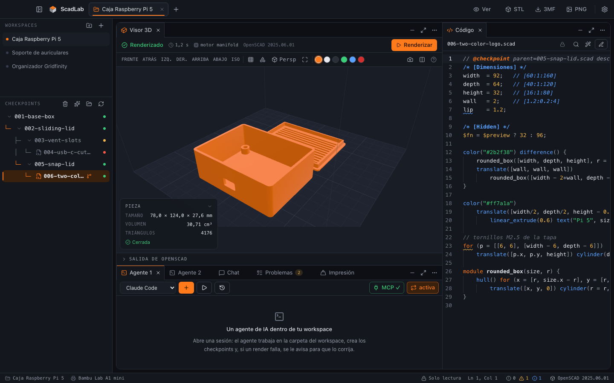
Ventana principal: workspaces y árbol de checkpoints a la izquierda, visor al centro, código a la derecha y agente de IA abajo.
La idea
OpenSCAD describe un modelo con código: es preciso, paramétrico y se versiona como texto. Lo difícil es
escribirlo. ScadLab pone un agente de IA a escribir ese código por ti, y se encarga de lo que rodea a esa
conversación:
Cada cambio es un checkpoint
La IA nunca sobrescribe un archivo: cada versión es un .scad nuevo en un árbol con ramas. Volver atrás es hacer clic.
Lo ves al instante
Visor 3D con materiales realistas, medidas, peso y costo estimado de cada pieza.
Los errores se corrigen solos
Si OpenSCAD falla al renderizar, ScadLab le pasa el error al agente para que lo arregle en un checkpoint nuevo.
Pensado para Bambu Lab
Perfil de impresora por proyecto, aviso si no cabe en la placa y 3MF con color por pieza para el AMS.
Tus agentes, no uno nuestro
Usa el CLI que ya tengas instalado —Claude Code, opencode, Codex, Antigravity— o un modelo local con Ollama.
Local
Tus proyectos son carpetas en tu disco y la configuración vive en una base SQLite local. Sin cuenta.
Estado del proyecto
Esta ayuda describe la versión 0.1.0, la primera de ScadLab. Los binarios para macOS y Windows
están en Releases (también puedes
compilarla desde el código). Todo lo que documenta esta página está
implementado y verificado con OpenSCAD real; nada está «en desarrollo».
Área
Estado en v0.1.0
Workspaces, configuración, idioma ES/EN
Disponible
Detección de OpenSCAD y de CLIs de agentes
Disponible
Skills incluidas y plantilla para skills propias
Disponible
Render con OpenSCAD: estado, diagnósticos, auto-render y RENDER_ERRORS.md
Disponible
Visor 3D: navegación, vistas, modos, medidas, colores, captura PNG y vista dividida
Disponible
Editor de código: resaltado, buscar y reemplazar, linter, formato, autocompletado y guardar como checkpoint
Disponible
Ventana: paneles acoplables (mover, dividir, flotar, minimizar y ocultar), diseños guardados, modo enfoque, barra lateral plegable, barra de estado y panel Problemas
Disponible
Varios proyectos a la vez: pestañas de proyecto con indicadores de fondo, reordenar, atajos y reapertura al arrancar
Disponible
Terminal de agentes (Claude Code, opencode, Codex, Antigravity) con sesiones y auto-iteración de errores
Disponible
Chat con modelos (Ollama, compatible con OpenAI, Anthropic) y guardar el código como checkpoint
Disponible
Exportar: STL, 3MF multicolor para Bambu (una parte por color con su extrusor), STL por color y abrir en Bambu Studio
Disponible
Servidor MCP de ScadLab: los agentes renderizan, validan, miden y ven sus modelos, configurado solo en cada CLI
Disponible
Medición por partes: selección en el visor, peso, filamento y costo estimados, aviso de placa y panel Impresión
Disponible
Motor integrado (OpenSCAD en WebAssembly): visor, exportación a STL/3MF y estimación sin tener OpenSCAD instalado, y el botón Descargar OpenSCAD
Disponible
Checkpoints avanzados: menú contextual, renombrar, papelera, padre activo, comparar con el padre y retomar la sesión que los creó
Disponible
Lo que todavía falta
No son funciones: es verificación a mano, en ventanas y programas reales, que no se puede automatizar.
Abrir ScadLab en una Windows real: el .exe se compila desde macOS y aún no se ha ejecutado allí.
El visor 3D, el editor y el arrastre de pestañas dentro de la ventana real (WebGL de WKWebView / WebView2, los workers de Monaco, Ctrl+Tab).
La terminal con un CLI de agente real, el chat contra un servidor real y una sesión de cada agente usando las herramientas MCP.
El botón Descargar OpenSCAD en una Windows real (la descarga de macOS está probada de punta a punta) y el motor integrado en los dos sistemas.
Abrir en Bambu Studio un 3MF exportado, asignar el AMS y laminar.
ScadLab es gratis, de código abierto y sin telemetría, y va a seguir así. Si te ahorra horas de modelado y quieres
que siga creciendo, puedes apoyarlo con un aporte único en Buy Me a Coffee o con una suscripción
mensual en Patreon. Los dos están también a un clic desde la app, en el pie de
Configuración.
Un ejecutable para macOS (Apple Silicon) y otro para Windows (x64). Los binarios no están
firmados todavía, así que el sistema avisa la primera vez que los abres.
Versión 0.1.0
Los archivos están en
Releases:
ScadLab-v0.1.0.dmg para macOS y ScadLab-v0.1.0-windows-amd64.exe para Windows. También
puedes compilarla desde el código.
La primera vez, clic derecho → Abrir (no doble clic) y confirma en el diálogo.
Gatekeeper
Si macOS dice que la app «está dañada» o «no se
puede verificar el desarrollador», es porque no está firmada ni notarizada. Ve a Ajustes del Sistema →
Privacidad y seguridad y pulsa Abrir igualmente, o quita la marca de cuarentena desde
la terminal:
Ejecuta el .exe: es portable, no necesita instalador.
Si aparece «Windows protegió su PC», pulsa Más información → Ejecutar de todas formas.
SmartScreen
El aviso aparece porque el ejecutable no está firmado
con un certificado de código y todavía tiene pocas descargas. No es un diagnóstico de virus. Si prefieres no
aceptarlo, compila desde el código fuente.
ScadLab usa WebView2 (el motor de Edge) para su interfaz. Viene incluido en Windows 10 y 11
actualizados; si faltara, la app te lo indica al arrancar.
Compilar desde el código
Necesitas Go, Node.js y la CLI de Wails v2:
go install github.com/wailsapp/wails/v2/cmd/wails@latest
git clone https://github.com/rafael180496/ScadLab.git
cd ScadLab
wails build # binario en build/bin/
Después de instalar
ScadLab no necesita OpenSCAD para abrir: sin él, renderiza con su motor integrado, y puedes descargar OpenSCAD
desde la propia app. Sigue con Requisitos.
Requisitos: OpenSCAD y agentes
OpenSCAD es el que convierte el código en geometría, y ScadLab trae una copia integrada de respaldo:
el visor 3D funciona aunque no lo hayas instalado. Los agentes de IA son opcionales, pero son la mitad de la gracia.
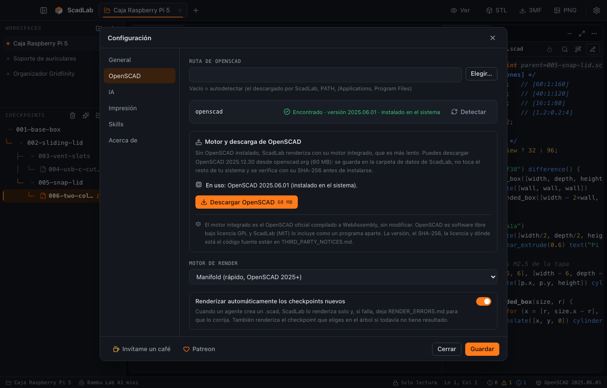
Configuración → OpenSCAD: detección automática, versión encontrada y motor de render.
OpenSCAD
Descárgalo desde openscad.org. Se recomienda una
versión de desarrollo reciente (snapshot) en lugar de la estable 2021.01: renderiza mucho más
rápido con el motor Manifold y exporta 3MF con color, que es lo que hace falta para el multicolor.
Al arrancar, ScadLab busca OpenSCAD en las rutas habituales y en el PATH, y muestra la versión
que encontró en Configuración. Si lo instalaste en otro sitio, indica la ruta a
mano ahí mismo.
Sin OpenSCAD instalado: motor integrado y descarga Disponible
Si ScadLab no encuentra OpenSCAD, no se detiene: renderiza con un motor integrado, el
OpenSCAD oficial 2025.12.30 compilado a WebAssembly. El visor 3D, la exportación a STL y 3MF (con una parte por color) y la
estimación de peso y costo funcionan igual; solo es más lento. El panel de render lo avisa con una
nota informativa, y la barra de estado muestra una insignia WASM 2025.12.30.
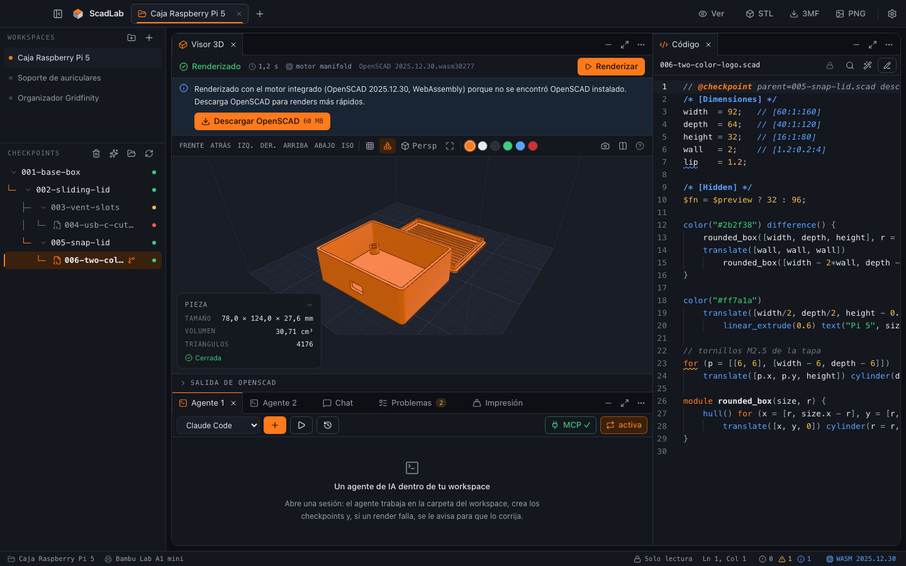
Render con el motor integrado: aviso informativo con el botón Descargar OpenSCAD y la insignia WASM en la barra de estado.
Para renderizar más rápido, pulsa Descargar OpenSCAD (en ese aviso o en
Configuración → OpenSCAD). ScadLab baja OpenSCAD 2025.12.30 de openscad.org (unos 60 MB en
macOS y 40 MB en Windows), comprueba su SHA-256 y lo instala en su propia carpeta de datos: no toca el resto de tu sistema
ni pide permisos de administrador. Mientras corre ves el avance y puedes Cancelar; una descarga cancelada
o fallida no deja nada. Al terminar, el checkpoint activo se vuelve a renderizar con el OpenSCAD real.
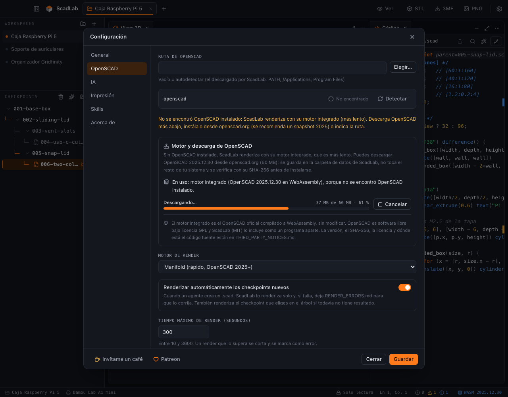
Configuración → OpenSCAD: qué motor se usa, la descarga en curso con Cancelar y, ya instalado, Quitar la descarga.
Orden de búsqueda
Qué se usa
1
La ruta que fijaste en Configuración → OpenSCAD
2
El OpenSCAD descargado por ScadLab
3
El de tu PATH y de las rutas habituales de instalación
4
El motor integrado (OpenSCAD en WebAssembly)
Quitar la descarga borra solo lo que bajó ScadLab, nunca un OpenSCAD que instalaste tú. La descarga existe
para macOS (Apple Silicon e Intel) y Windows (64 bits); en otros sistemas, instala OpenSCAD tú.
Licencia. OpenSCAD es software libre bajo licencia GPL. El motor integrado es el oficial, sin
modificar, y ScadLab (MIT) lo incluye como un programa aparte; la versión, el SHA-256, la licencia y dónde está el
código fuente figuran en THIRD_PARTY_NOTICES.md. El OpenSCAD que descargas no lo distribuye ScadLab: viene
directo de openscad.org.
Agentes de IA (opcionales)
ScadLab no trae su propio modelo: usa los CLIs que ya tengas instalados y con sesión iniciada para la
terminal, y los servidores de modelos que habilites para el chat.
Detecta cualquiera de estos:
Agente
Qué necesitas
Claude Code
El CLI claude instalado y con sesión iniciada
opencode
El CLI opencode con un proveedor configurado
Codex
El CLI codex con sesión iniciada
Antigravity
El CLI de Antigravity instalado
Ollama (chat)
Ollama corriendo en local (por defecto http://localhost:11434) y un modelo descargado
Compatible con OpenAI (chat)
Un servidor con esa API (LM Studio, vLLM, OpenRouter…) y la variable de entorno con su API key
Anthropic (chat)
La variable de entorno con tu API key de Anthropic
Cada agente se cobra y se rige por las condiciones de su propio proveedor; ScadLab solo lo ejecuta.
Tu primer proyecto
De una carpeta vacía a una pieza que puedes imprimir: crea un workspace, pídele algo al
agente y mira el resultado.
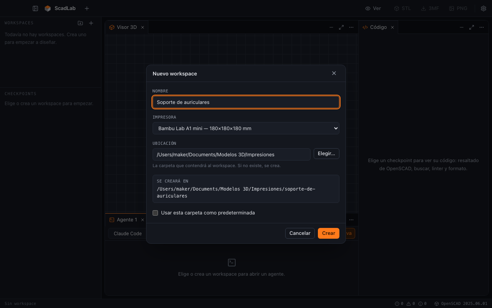
Nuevo workspace: nombre, impresora y ubicación. «Se creará en» muestra la ruta exacta; la casilla de abajo la deja como carpeta predeterminada.
1. Crea el workspace Disponible
Pulsa Nuevo workspace.
Ponle nombre (por ejemplo Caja sensores) y elige la impresora.
En Ubicación elige la carpeta donde se crea (Elegir…): de forma predeterminada es la de
Configuración → General, y se crea si no existe. Debajo, Se creará en te muestra la ruta final exacta
(<ubicación>/caja-sensores) mientras escribes el nombre; si esa carpeta ya existe y no está vacía,
ScadLab no la toca y te dice cuál es.
ScadLab crea la estructura y copia las skills para todos los CLIs.
2. Pídele el modelo al agente Disponible
Abre el panel Agente, elige tu agente, pulsa Nueva y describe la pieza con medidas:
Haz una caja de 60×40×25 mm con paredes de 2 mm y una tapa a presión con holgura de
0,2 mm. Esquinas redondeadas de 4 mm. Caja en azul y tapa en blanco. Debe caber en la A1 mini.
El agente crea 001-base-box.scad, ScadLab lo renderiza solo y el checkpoint aparece en el árbol;
si falla, el agente recibe el aviso para corregirlo (auto-iteración). Un checkpoint
mínimo se ve así:
Cada petición nueva genera un checkpoint nuevo: «agrega cuatro agujeros de 3 mm en la base para
tornillos M3» crea 002-… con parent=001-…. Si no te gusta, haz clic en el
anterior y pide otra cosa: eso crea una rama.
4. Exporta
Con el checkpoint que te guste seleccionado, pulsa 3MF en la cabecera y ábrelo en Bambu
Studio. Detalle en Exportar.
Workspaces
Un workspace es un proyecto: una carpeta en tu disco con los checkpoints, la configuración
de la impresora y las reglas para los agentes.
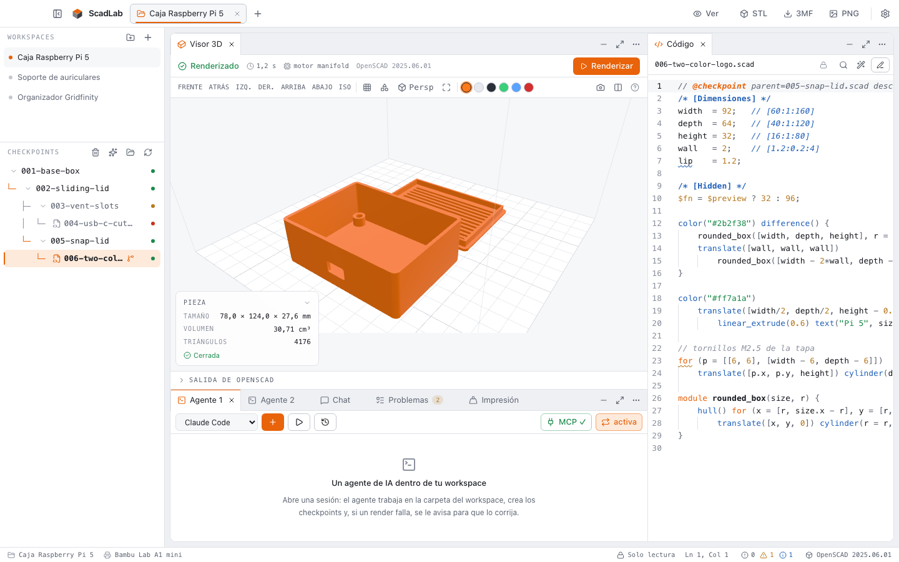
Workspaces a la izquierda (tema claro): el abierto lleva el punto naranja.
Qué hay dentro Disponible
caja-sensores/
├── 001-base-box.scad # checkpoints: uno por versión
├── 002-m3-holes.scad
├── printer.json # impresora del proyecto
├── CLAUDE.md # reglas para Claude Code
├── AGENTS.md # reglas para opencode, Codex, Antigravity
├── lib/ # librerías (BOSL2, MCAD…) si las usas
├── .claude/skills/ # skills, copiadas para cada CLI
├── .agents/skills/
├── .opencode/skills/
└── .agent/skills/
Es una carpeta normal: puedes abrirla con cualquier editor, versionarla con Git o copiarla a otra máquina.
ScadLab la reconoce al volver a abrirla.
Crear, abrir y recientes Disponible
Nuevo workspace: nombre, impresora y ubicación (la carpeta que lo contendrá; el workspace queda en
<ubicación>/<nombre-en-minúsculas-y-guiones>). Con Usar esta carpeta como predeterminada
los próximos se crean ahí. Una carpeta de destino que ya existe y tiene archivos se rechaza sin tocarla.
Abrir: elige una carpeta existente; ScadLab completa lo que falte (skills, reglas) sin tocar tus archivos .scad.
Puedes tener hasta 4 proyectos abiertos a la vez, cada uno en su pestaña, en la cabecera, a la
derecha del logo. Es una sola ventana: no se abren ventanas nuevas del sistema.
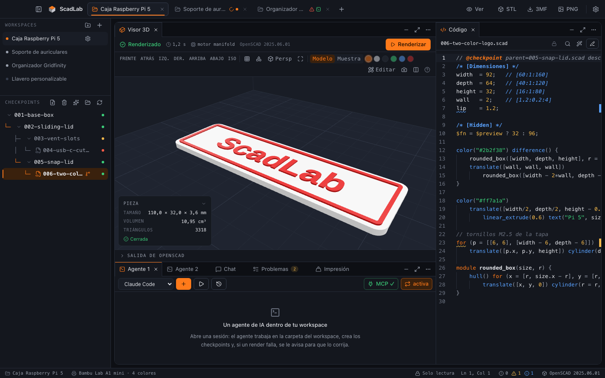
Tres proyectos abiertos. La activa va subrayada; las de fondo muestran qué pasa en ellas: render en curso, último render fallido, agente en marcha y cambios sin guardar.
Abrir otro: el botón + de la cabecera lista tus workspaces (los ya abiertos llevan una marca y te llevan a su pestaña) y ofrece Nuevo workspace…. Hacer clic en un workspace de la barra lateral también lo abre como pestaña. Con 4 abiertos el + se apaga, y su aviso te dice que cierres uno.
Cambiar de pestaña es instantáneo y no pierde nada: cada proyecto conserva su checkpoint elegido, el código sin guardar (y si estabas editando), la comparación con el padre abierta, la parte seleccionada en el visor y el chat que tenías. La barra lateral, el visor, el código, Problemas, Impresión y el chat siguen al proyecto que está al frente.
Los de fondo siguen trabajando: su carpeta se sigue vigilando, el auto-render sigue respondiendo a lo que escriba un agente, y sus agentes y la auto-iteración siguen corriendo. Los paneles Agente 1 y Agente 2 muestran las terminales del proyecto activo (hasta 2 por proyecto, 8 en total); las de los demás siguen vivas, con su pantalla intacta, hasta que vuelvas a ellas.
Reordenar: arrastra una pestaña, o usa su menú (clic derecho): Mover a la izquierda / a la derecha, Cerrar, Cerrar los demás y Mostrar en el Finder (en Windows, en el Explorador).
Cerrar con la × o con el atajo: si el proyecto tiene cambios sin guardar o agentes en marcha, ScadLab te dice qué se pierde antes de cerrar (los agentes se detienen). Cerrar el último deja la pantalla vacía.
Al abrir ScadLab se reabren las pestañas que tenías y la que estaba al frente.
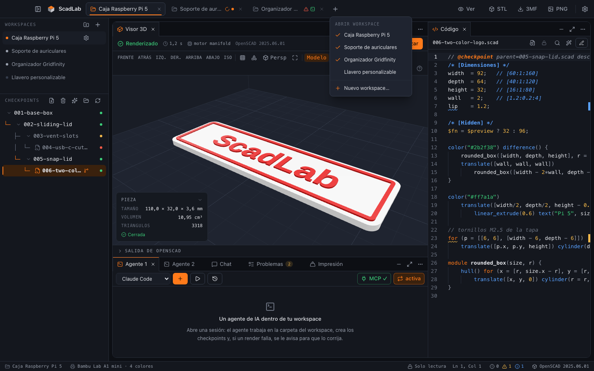
El menú +: los workspaces ya abiertos llevan una marca; el resto se abre en una pestaña nueva.
En ventanas angostas (o con la interfaz agrandada) las pestañas se acortan con puntos suspensivos y dejan solo el
indicador más importante; nunca empujan los botones de exportar fuera de la ventana. Pasa el ratón sobre una pestaña
para ver el nombre completo y su carpeta.
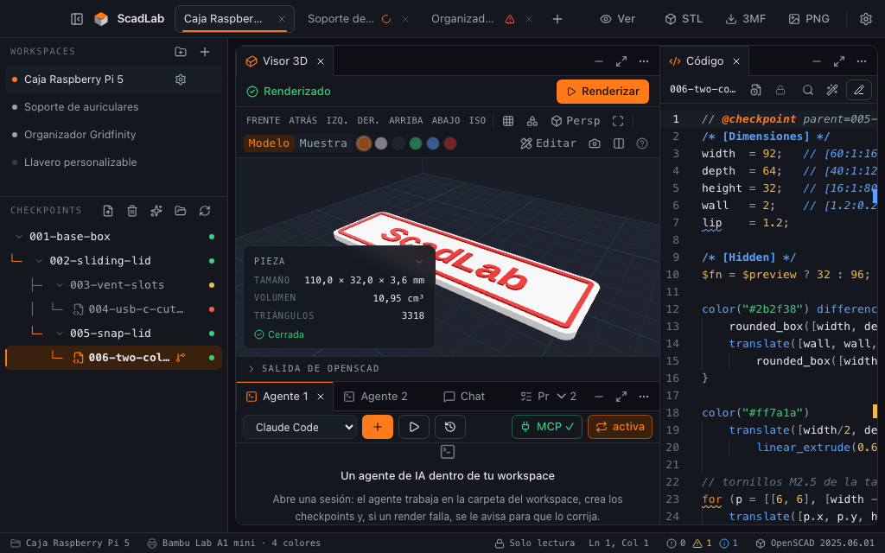
A 1024 px las pestañas se acortan; la cabecera no desborda.
Atajos de las pestañas de proyecto
macOS
Windows
Qué hace
⌃Tab / ⌃⇧Tab
Ctrl+Tab / Ctrl+Shift+Tab
Pestaña de proyecto siguiente / anterior
⌘1 … ⌘4
Ctrl+1 … 4
Ir a la pestaña 1, 2, 3 o 4
⌘W
Ctrl+W
Cerrar el proyecto activo (con confirmación si pierde algo). En Windows, con el foco en una terminal de agente, Ctrl+W es de la shell (borrar palabra): ahí se usa Ctrl+Shift+W
No chocan con los demás atajos: el dock usa ⌘⇧1…7, el visor usa 1–7 sin modificador y
el editor y la terminal no usan estas combinaciones. Con un diálogo abierto no actúan.
Cada agente ve los otros proyectos abiertos
Al abrir un agente desde ScadLab, se le agregan las carpetas de los otros proyectos abiertos en ese
momento (--add-dir en Claude Code, Codex y Antigravity) y sus reglas le dicen que puede leerlas para
reutilizar piezas, pero que solo escribe en el suyo. Dos salvedades:
opencode no tiene una opción equivalente: solo ve la carpeta de su propio proyecto.
Las carpetas se fijan al abrir el agente: si abres otro proyecto después, un agente que ya estaba abierto no se entera. Pulsa Nueva en su terminal para relanzarlo con la lista actual.
Lo que ScadLab recuerda al cerrar Disponible
Al volver a abrir la aplicación todo queda como lo dejaste, sin guardar nada a mano:
Proyectos y checkpoint: las pestañas abiertas, cuál estaba al frente y, en cada proyecto, el checkpoint que tenías
elegido (no el más nuevo; si ese archivo ya no existe, se abre el más reciente).
Paneles: el diseño (divisiones, paneles flotantes u ocultos), qué pestaña estaba activa en cada grupo, el panel
maximizado y los grupos minimizados. El modo enfoque no se recuerda: ScadLab siempre abre con tus paneles.
Ventana: el ancho de la barra lateral, si estaba oculta, y la barra de estado.
Visor 3D: alambre, aristas, proyección ortográfica o en perspectiva, vista dividida, la muestra de color elegida y si
la pieza se pinta con los colores del modelo, y las medidas plegadas. La cámara no: cada pieza se encuadra sola.
Apariencia: tema, tamaño de la interfaz y letras del editor, la terminal y el chat.
Sincronización de skills Disponible
Al crear o abrir un workspace, ScadLab copia las skills incluidas y las tuyas en las cuatro ubicaciones
que leen los CLIs. Así da igual qué agente uses: todos siguen las mismas reglas. Ver
Skills incluidas.
Checkpoints: el historial Disponible
Cada versión del modelo es un archivo .scad inmutable. El historial no está en una
base de datos: se reconstruye leyendo los archivos.
Árbol de checkpoints: 005-snap-lid es una rama que sale de 002-sliding-lid. El punto de cada nodo es su estado de render.
El formato
Nombre: NNN-slug.scad — número de tres dígitos (el siguiente al mayor que exista)
y un slug corto en kebab-case: 001-base-box.scad, 002-rounded-corners.scad.
En el primer checkpoint parent= va vacío. desc dice qué cambia respecto al padre, en
una frase y sin comillas dobles dentro.
Por qué son inmutables
La IA nunca sobrescribe un checkpoint, ni siquiera uno con error: el arreglo va en uno
nuevo. Así cualquier versión que viste sigue existiendo exactamente igual, y comparar o volver atrás no
depende de que nadie haya guardado nada. Cada checkpoint es autocontenido (copia todo el
código del padre): no hace include de otro checkpoint.
Cargar un checkpoint
Un clic en el árbol lo selecciona y, si nunca se renderizó y el auto-render está activo, lo renderiza. Las
mallas quedan en una caché en disco, así que volver a una versión que ya viste no recalcula
nada. Ver Renderizar y diagnósticos.
La descripción
Al pasar el ratón sobre un checkpoint, el tooltip muestra su desc (es la forma rápida de saber qué
cambió sin abrir el código), el archivo, quién lo creó —el agente y la sesión, o «Guardado desde el
chat»— y cuándo.
Qué guarda ScadLab junto a los checkpoints
La carpeta .scadlab/ del workspace guarda dos cosas que no son modelos: la
papelera y el padre activo
(.scadlab/active-parent, una línea con un nombre de archivo). Los rótulos, el plegado y el vínculo con
la sesión del agente viven en la base local scadlab.db: si la pierdes, el árbol se reconstruye igual
leyendo los archivos y solo se van esos detalles. Ninguna de las dos cosas toca tus .scad.
Árbol, ramas y menú Disponible
El historial es un árbol, no una lista: puedes volver a cualquier punto y probar otra idea sin
perder la anterior. Haz clic derecho sobre un checkpoint (o pulsa «…» al pasar el ratón) para todo lo que sigue.
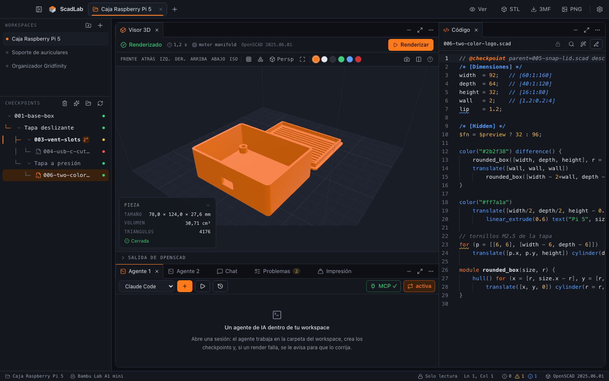
El padre activo (003-vent-slots) lleva el ícono de rama; los conectores de la rama que baja hasta él van en color de acento.
Ramificar y el padre activo
El padre activo es el checkpoint del que cuelga el próximo que se cree, sea el agente de
la terminal, el chat, el servidor MCP o tú al guardar desde el editor. Se marca en el árbol con un ícono de rama.
Para ramificar, haz clic derecho en el checkpoint de donde quieres partir y elige Ramificar desde aquí:
el agente lo lee de .scadlab/active-parent (lo dicen las reglas del workspace) y la
herramienta create_checkpoint lo usa por defecto.
Avanza solo. Cuando se crea un checkpoint hijo del activo, el nuevo pasa a ser el activo: sigues
trabajando en la misma rama sin volver a marcarla. Una variante que sale de otro padre no mueve el activo.
Sin padre activo, rige lo de siempre: el próximo cuelga del checkpoint más nuevo, y el árbol marca
ese.
Si mandas el activo a la papelera, el activo pasa a su padre.
001-base-box
├── 002-rounded-corners
│ ├── 003-snap-lid # padre activo: el próximo cuelga de aquí
│ └── 005-alt-screw-lid # parent=002: rama nueva
└── 004-tall-version # parent=001
Menú contextual
El menú de un checkpoint creado por Claude Code: «Retomar en Claude Code» solo aparece con un vínculo.
Acción
Qué hace
Ver código
Elige el checkpoint y abre su código en el panel Código
Comparar con el padre
Muestra en el panel Código qué cambió respecto del padre. Deshabilitada en una raíz
Reabre la conversación en la que se creó: «Retomar en Claude Code» (o el agente que fuera) o «Abrir el chat»
Plegar / desplegar rama
Oculta o muestra los checkpoints que cuelgan de este
Copiar nombre
Copia el nombre del archivo al portapapeles
Mostrar en el Finder / Explorador
Abre la carpeta del workspace con el archivo seleccionado
Mover a la papelera ⌫
Saca solo ese checkpoint del árbol. Sus hijos se quedan, con el padre perdido (marcados con ⚠)
Mover con su rama a la papelera
Se lleva el checkpoint y todos sus descendientes. La confirmación dice cuántos son
Renombrar
Renombrar cambia el rótulo: el nombre que se ve en el árbol, hasta 80 letras. El archivo no
cambia de nombre, porque sus hijos lo nombran en su parent= y un checkpoint es inmutable. Intro guarda, Esc
cancela, y dejarlo vacío vuelve a mostrar el nombre del archivo.
La papelera
ScadLab nunca borra un checkpoint: «borrar» lo mueve a .scadlab/trash/ del workspace,
con la fecha delante del nombre. El ícono de papelera de la cabecera del árbol muestra cuántos hay y abre la lista,
con su descripción, cuándo se descartó y el botón Restaurar.
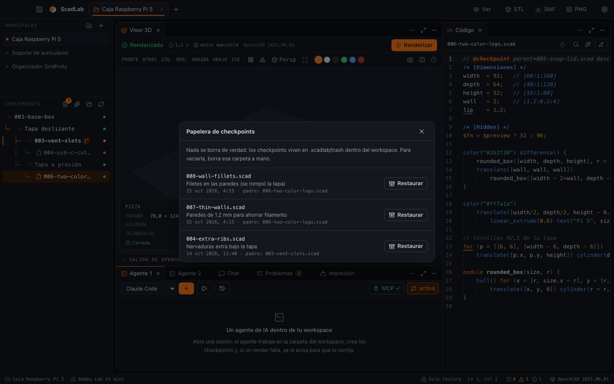
La papelera: restaurar devuelve el archivo (y su rótulo y su vínculo con la sesión) al árbol.
Restaurar devuelve el checkpoint a su nombre; si ese número ya lo ocupa otro, toma el siguiente libre con el mismo
slug. El archivo no se reescribe, así que sus hijos —que lo nombran— solo se reenganchan si volvió con su nombre.
No hay «vaciar papelera» en la app. Si quieres liberar el espacio, borra la carpeta .scadlab/trash/ a mano.
Comparar con el padre
El panel Código se convierte en un visor de diferencias de solo lectura: a la izquierda el padre, a la derecha el
checkpoint, con lo agregado y lo quitado resaltado y el resto plegado. En un panel angosto se muestra en una sola
columna; el botón de la barra lo cambia a mano. Volver al código (o elegir otro checkpoint) lo cierra.
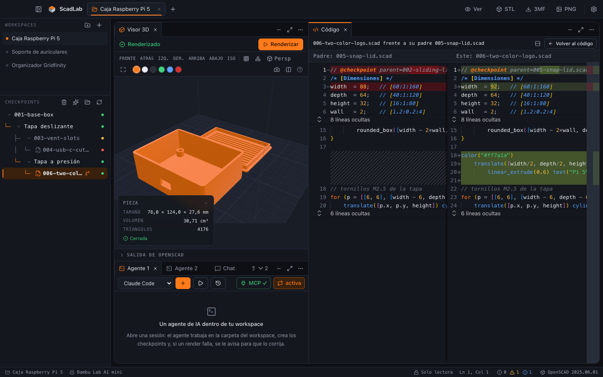
Comparar 006 con su padre: el ancho cambia de 88 a 92 y aparece el bloque del logo.
Retomar la sesión que lo creó
Cuando aparece un checkpoint nuevo y hay una terminal de agente abierta en ese workspace, ScadLab guarda qué
agente y qué sesión lo crearon (la más reciente de ese agente para la carpeta). Los que guardas desde el chat
recuerdan el chat. Después, Retomar sesión abre el agente en la terminal con esa conversación
(--resume) o abre el chat. Lo que guardas tú desde el editor no se atribuye al agente, y Antigravity, que
no lista sus sesiones, no se puede retomar por id.
Plegar y conectores
Cada rama se puede plegar para que el árbol no crezca sin fin. Las líneas de conexión dibujan quién viene
de quién aunque la numeración salte.
Con el teclado
Con el foco en un checkpoint del árbol: ↑↓ se mueven, ←→ pliegan y
despliegan, Intro lo elige, F2 lo renombra, ⌫ / Supr lo manda a la papelera
(con confirmación) y la tecla de menú o Shift+F10 abre el menú. Esas teclas son del árbol: con el foco en el
editor o en la terminal no hacen nada. Ver Atajos de teclado.
Renderizar y diagnósticos Disponible
ScadLab corre OpenSCAD sobre cada checkpoint y te dice cómo salió: cuánto tardó, si la malla
vino de la caché y, si falló, qué error dio y en qué línea.
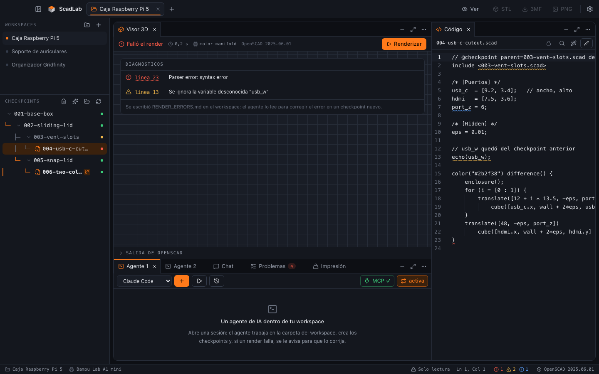
Render fallido: diagnósticos con su línea (clic = ir a esa línea en el código) y el aviso de RENDER_ERRORS.md para el agente. En el árbol, el punto rojo marca el checkpoint roto.
Renderizar y cancelar
Elige un checkpoint y pulsa Renderizar en el panel del visor. Mientras corre, el botón pasa a
Cancelar. Solo hay un render a la vez por workspace: si eliges otro checkpoint y lo renderizas,
el anterior se cancela. Si el render sale bien, la pieza aparece en el visor 3D
debajo de la barra de estado; si falla, el panel muestra los diagnósticos.
La barra de estado
Dato
Qué significa
Duración
Lo que tardó OpenSCAD, en segundos
Desde caché
La malla no se volvió a calcular: el código y sus include/use no cambiaron desde la última vez. Volver a un checkpoint ya renderizado es inmediato, incluso tras reiniciar la app
Motor
manifold o cgal. Si tu OpenSCAD es viejo y no conoce Manifold, ScadLab cae a CGAL solo
Versión
La versión de OpenSCAD que hizo el render
El estado en el árbol
Indicador
Estado
Spinner
Renderizando
Punto verde
Salió bien
Punto ámbar
Salió, pero con advertencias (una variable sin definir, un include que no encontró…)
Punto rojo
Falló
Sin punto
Todavía no se renderizó
Al pasar el ratón sobre el indicador se lee el resumen: la duración, cuántas advertencias hubo o el primer
error con su línea.
Diagnósticos y salida de OpenSCAD
Si el render tiene errores o advertencias, el panel los lista con su severidad, la línea y el
mensaje (y el archivo, si el error está en un include). Un modelo que no genera nada —por ejemplo,
todo dentro de un difference() que se resta entero— también cuenta como error. Debajo,
Salida de OpenSCAD despliega el texto completo que imprimió OpenSCAD, que se puede seleccionar y
copiar.
Auto-render
ScadLab vigila la carpeta del workspace abierto. Cuando aparece un .scad nuevo —por ejemplo, porque
un agente lo creó desde la terminal— el árbol se actualiza solo y, con el auto-render activo, ese checkpoint se
renderiza sin que toques nada. Si llegan varios a la vez, se renderiza el de número más alto. Elegir en el árbol
un checkpoint que nunca se renderizó también lo renderiza. Se apaga en
Configuración → OpenSCAD.
RENDER_ERRORS.md
Cuando un render falla, ScadLab escribe RENDER_ERRORS.md en la raíz del workspace: el archivo, los
errores con su línea, el código alrededor de cada una, las advertencias y la instrucción de corregirlo en un
checkpoint nuevo cuyo padre sea el que falló. Las reglas del workspace le dicen al agente que lo
lea. Cuando un render sale bien, el archivo se borra; uno cancelado o sin OpenSCAD no lo toca.
El archivo describe siempre el checkpoint más nuevo, que es sobre el que trabaja el agente.
Renderizar uno viejo mientras recorres el historial no lo escribe ni lo borra: abrir un checkpoint roto ya
superado no le manda al agente errores que ya corrigió, y abrir uno viejo que anda no esconde que el último
está roto. Ver
Auto-iteración de errores.
Si OpenSCAD no está
No te frena: ScadLab renderiza con su motor integrado y el panel muestra una nota informativa (no un
error) con la versión y el motivo, y el botón Descargar OpenSCAD con su avance y
Cancelar. La barra de estado muestra WASM 2025.12.30. Solo si tampoco arranca el motor
integrado, el panel avisa que no se puede renderizar, con el botón de descarga y otro que abre
Configuración en la pestaña OpenSCAD, donde puedes indicar la ruta del ejecutable. Si lo
instalas con la app abierta, el próximo render ya lo encuentra. Ver
Sin OpenSCAD instalado.
Navegar el modelo Disponible
Cuando un render sale bien, el visor muestra la pieza con materiales PBR y reflejos de entorno
sobre la placa de tu impresora, a escala, para que la veas como se verá impresa y no como una malla plana.
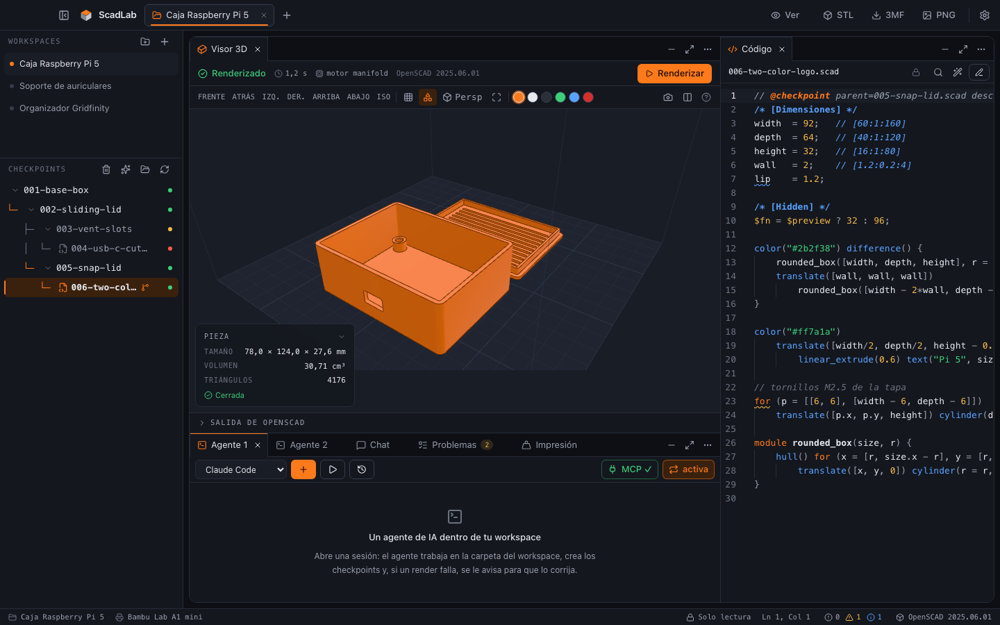
La pieza apoyada en la placa de la impresora del workspace, con las aristas marcadas. Arriba, la barra del visor; abajo a la izquierda, sus medidas.
La placa
La placa es la de la impresora del workspace, a escala real: cuadrícula de 10 mm (más marcada cada
50 mm) y la caja del volumen de impresión en líneas tenues. La pieza se apoya en la placa y se centra
sobre ella, como haría el laminador. El visor usa Z hacia arriba, igual que OpenSCAD.
Ratón y trackpad
Gesto
Acción
Arrastrar con botón izquierdo
Orbitar alrededor del modelo
Arrastrar con botón derecho, o Shift + arrastrar
Desplazar (pan)
Rueda, o pellizco en el trackpad
Zoom
Táctil
Un dedo orbita; con dos, el pellizco hace zoom y el arrastre desplaza.
Teclado
Haz clic en el visor para darle el foco. Las flechas orbitan, Shift+flechas desplazan,
+ / − hacen zoom, 1–7 eligen las vistas
y F encuadra la pieza. El botón ? de la barra del visor recuerda todos los controles.
Lista completa en Atajos de teclado.
Cambiar de checkpoint
Al elegir otro checkpoint la cámara se queda donde estaba: así se comparan dos versiones desde el mismo
ángulo. Mientras llega la malla nueva sigue a la vista la anterior, y volver a uno ya visto es instantáneo
(las mallas quedan en memoria). Si el render del checkpoint falla, el visor se oculta y el panel muestra los
diagnósticos; las advertencias de un render que salió bien quedan plegadas en
una esquina del visor.
Modos de vista y cámaras Disponible
Wireframe, aristas, proyección ortográfica o en perspectiva y siete vistas predefinidas, todo
desde la barra del visor.
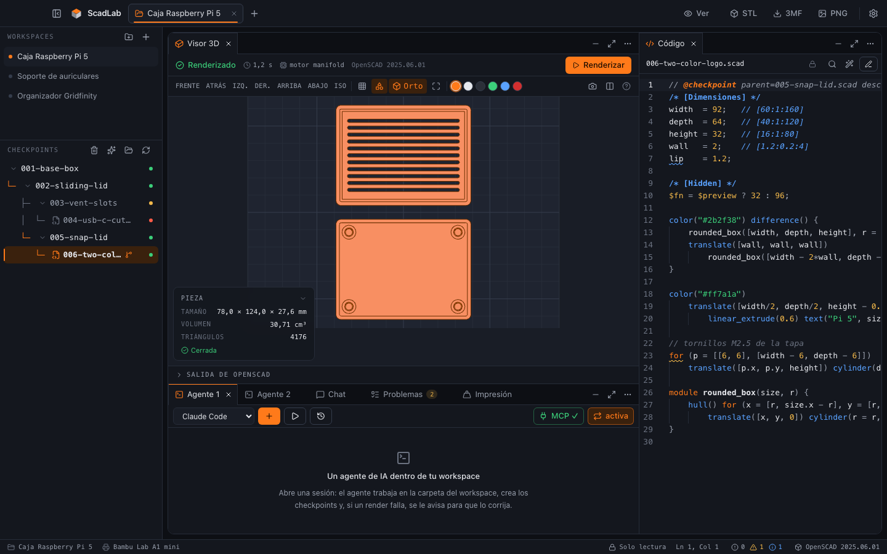
Vista Arriba en ortográfica: sin deformación por la distancia, las ranuras y los standoffs se ven en su posición real.
Modos de render
Sólido (por defecto): materiales PBR con reflejos.
Wireframe (W): solo la malla, útil para ver la densidad de triángulos ($fn demasiado alto).
Aristas (E): sólido con los bordes de más de 30° marcados, para leer la forma de piezas monocromas.
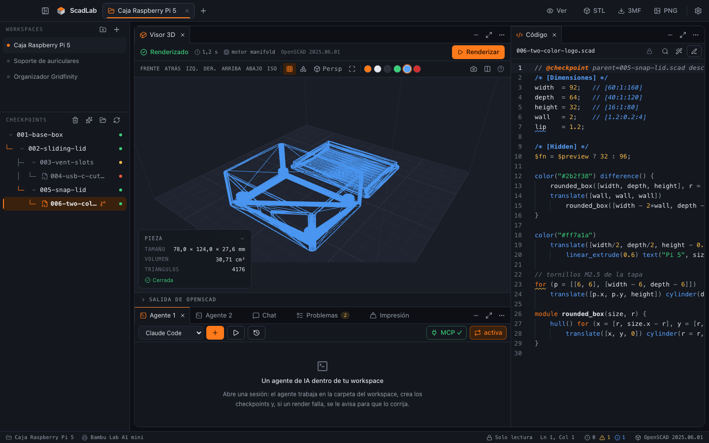
Wireframe: los triángulos de la malla STL. Los cilindros de los standoffs concentran la mayoría.
Ortográfica o perspectiva
El botón Persp / Orto (O) cambia la proyección sin mover la vista.
La ortográfica no deforma por la distancia: es la que conviene para comparar medidas o alinear piezas mirando de
frente. La perspectiva es la natural para ver el conjunto.
Las siete vistas
Frente 1
Atrás 2
Izquierda 3
Derecha 4
Arriba 5
Abajo 6
Iso 7
Cada vista mira la pieza desde ese lado y la encuadra. Abajo es la que se olvida y la que más
importa para imprimir: muestra la cara que irá apoyada en la placa (desde abajo la placa se oculta para no
taparla). Encuadrar (F) vuelve a centrar la pieza sin cambiar el ángulo.
Medir una pieza: volumen, peso y costo Disponible
El visor entiende el modelo por partes: cada color es una parte. Haz clic en una y
ves su tamaño, su volumen y cuánto pesa, cuánto filamento lleva y cuánto cuesta imprimirla. Si la pieza no cabe en la
placa, te lo avisa antes de que lo descubras en el laminador.
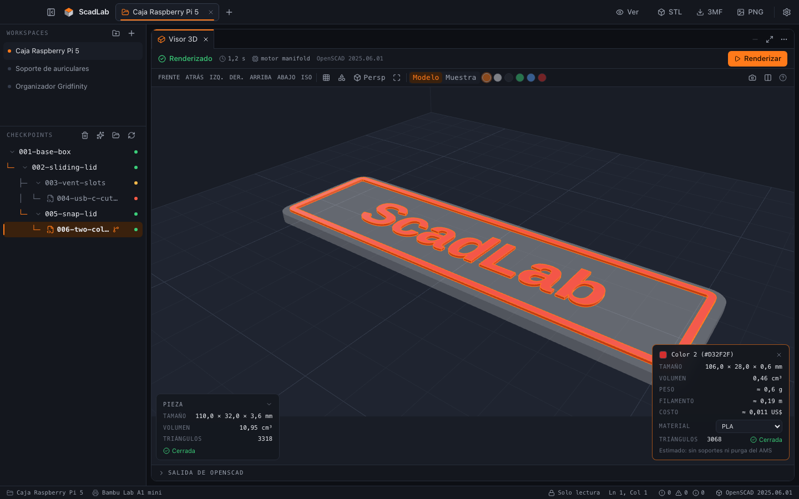
Una parte seleccionada: se resalta, el resto se atenúa y la tarjeta de abajo a la derecha da sus medidas y su estimación.
El panel de la pieza
La esquina de abajo a la izquierda mide el modelo entero:
Dato
De dónde sale
Tamaño X × Y × Z
Caja envolvente de la malla, en mm
Volumen
Volumen sólido de la malla, en cm³
Triángulos
Cuántos tiene la malla STL. Muchos suelen ser un $fn demasiado alto
Cerrada / Abierta
Si la malla es estanca (cada arista la comparten exactamente dos caras). Una abierta puede laminarse mal
Partes y selección
Cada color() del .scad es una parte (por eso las skills obligan a la IA a colorear todo; un
modelo sin color es una sola parte). Un clic la selecciona: se resalta con su contorno y el resto
se atenúa. Esc o un clic en el vacío deselecciona. Un arrastre para orbitar nunca selecciona sin querer, y la
vista dividida conserva la selección.
La tarjeta de la parte muestra:
Dato
Qué es
Color, tamaño, volumen, triángulos y Cerrada / Abierta
Lo mismo que el panel de la pieza, pero de esa parte sola
Peso ≈
Gramos estimados con el material de la parte
Filamento ≈
Metros de filamento que consume, según el diámetro configurado
Costo ≈
Peso × costo por kg del material, en tu moneda
Material
Selector por parte: cambia su densidad y su costo, y la estimación se recalcula al instante
El interruptor Modelo / Muestra de la barra del visor decide con qué se pinta: Modelo usa el color
que le dio cada color(); Muestra pinta todo con el color que elijas entre las seis muestras (al
elegir una muestra pasa solo a ese modo). Un modelo sin color() siempre se pinta con la muestra.
Los números de peso, filamento y costo son estimaciones; la fórmula, explicada en simple, está en
Estimación de costo, y la tabla completa de todas las partes, en el panel Impresión.
Aviso: no cabe en la placa
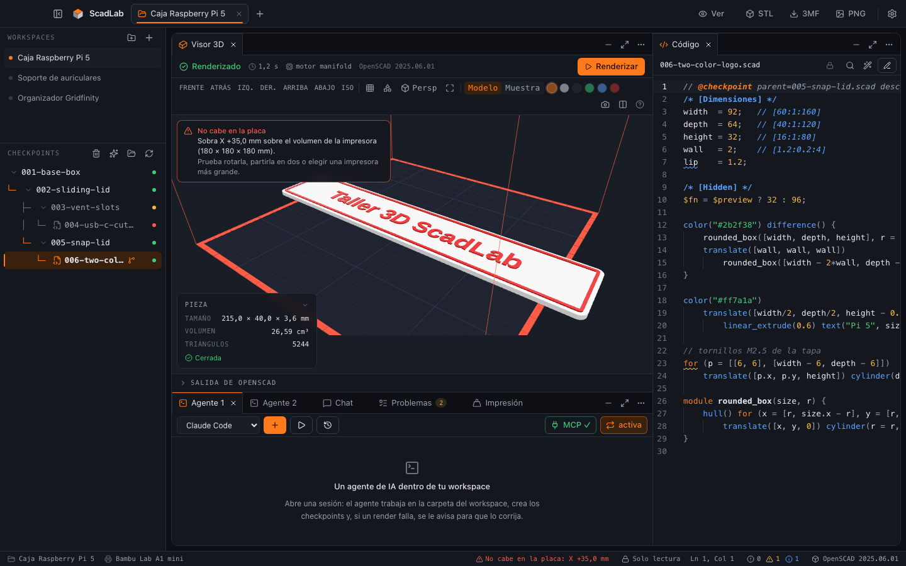
Una placa de 215 mm en una A1 mini (180 mm): contorno rojo, aviso con lo que sobra y el mismo aviso en la barra de estado.
ScadLab compara la caja del modelo con el volumen de impresión de la impresora del workspace. Si
no cabe, el contorno de la cama se pinta en rojo y un aviso dice cuántos mm sobran en cada eje y qué
probar: rotar la pieza, partirla en dos o elegir una impresora más grande. El aviso también aparece en la barra de
estado, y un clic en él abre el panel Impresión.
Colores, captura y vista dividida Disponible
Prueba colores, guarda una imagen del modelo y mira dos ángulos a la vez.
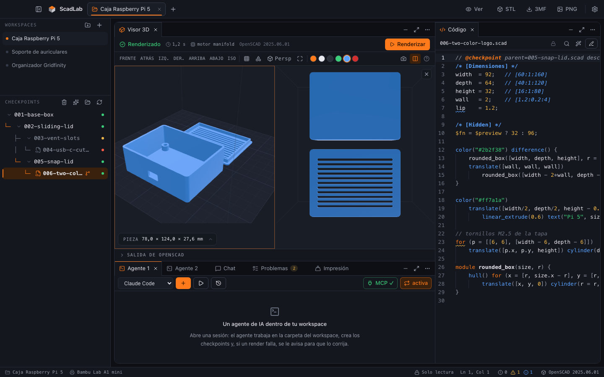
Vista dividida: Iso a la izquierda y Abajo a la derecha, pintadas con la muestra azul. El marco naranja indica la vista activa.
Seis muestras de color
La barra del visor tiene 6 muestras —pensadas como los filamentos que tienes cargados en el
AMS—. Un clic pinta la pieza de ese color; doble clic o clic derecho abre el
selector para cambiar la muestra, y la paleta se guarda. El color es solo del visor: para que quede en el
modelo (y en el 3MF), pídeselo al agente: «cambia la tapa a naranja».
Captura PNG
El botón de la cámara de la barra del visor guarda la vista activa tal como la ves —ángulo, modo y color—
en un PNG: ScadLab pregunta dónde guardarlo. Útil para documentar variantes o compartirlas antes de imprimir.
Vista dividida
Parte el visor en dos con una segunda cámara independiente sobre la misma pieza: por ejemplo
Iso a la izquierda y Abajo a la derecha, para ver la forma y la cara de apoyo a la vez. Haz clic en una de las
dos para activarla (queda con marco naranja): la barra y el teclado actúan sobre la activa, y cada una tiene su
propia proyección. La × de la derecha la cierra.
El editor de código Disponible
Monaco —el editor de VS Code, incluido en la app, sin internet— con resaltado de OpenSCAD,
buscar y reemplazar, formato automático, autocompletado con la documentación de cada módulo y un linter que
revisa el código mientras escribes. Guardar nunca toca el checkpoint: crea uno nuevo.
Código en solo lectura. El linter subraya en ámbar la pieza sin color() (línea 23) y en azul el parámetro sin rango (línea 7); la barra de estado cuenta los problemas.
Solo lectura y modo edición
Un checkpoint es inmutable, así que el código se abre en solo lectura (el candado de la
cabecera del panel y de la barra de estado lo dice). Pulsa Editar o haz doble clic
en el código para pasar a edición. Mientras editas, el árbol no cambia: el checkpoint sigue siendo el que era hasta
que guardes. Descartar (la flecha curva) vuelve al código guardado; si cambias de checkpoint o de
workspace con cambios sin guardar, ScadLab pregunta antes de perderlos.
Guardar = checkpoint nuevo
⌘S / Ctrl+S (o Guardar) abre un diálogo corto: el rótulo da
el nombre del archivo (007-tornillos-de-la-tapa.scad; el número lo asigna ScadLab) y la
descripción va al encabezado @checkpoint. El archivo nuevo es hijo del que estabas
viendo, aparece en el árbol, se abre y —con el auto-render activo— se renderiza solo. Igual que si lo hubiera hecho
la IA.
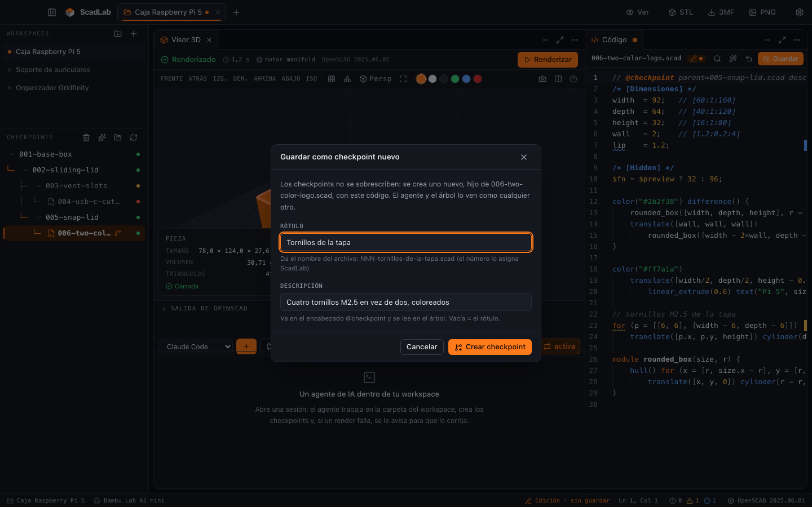
Guardar desde el editor: rótulo, nombre de archivo resultante y descripción del checkpoint hijo.
Autocompletado y ayuda de cada módulo
Al escribir aparecen los módulos, funciones, palabras clave y variables especiales ($fn, $fa…)
de OpenSCAD con su firma y su explicación en tu idioma. Elegir uno abre el paréntesis con el primer parámetro marcado,
y la ayuda de firma muestra el resto mientras escribes los argumentos (también con nombre:
r = 3 marca r). Pasar el ratón sobre un módulo integrado muestra la misma ayuda.
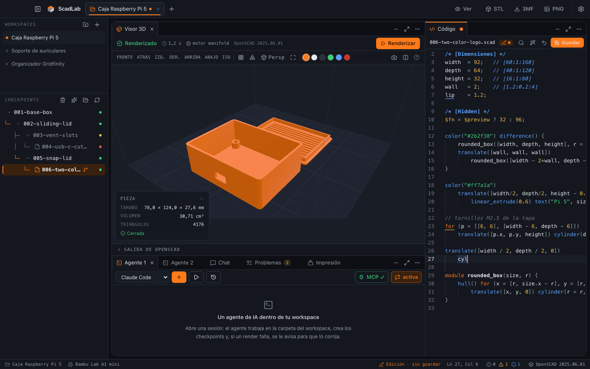
Modo edición: el autocompletado propone cylinder con su firma y sus parámetros.
Buscar y reemplazar
⌘F / Ctrl+F — buscar (también en solo lectura), con mayúsculas, palabra completa y expresiones regulares.
⌥⌘F o ⌘H / Ctrl+H — buscar y reemplazar (en modo edición).
Enter / Shift+Enter — siguiente / anterior; Esc cierra.
Buscar y reemplazar: wall aparece 6 veces, todas resaltadas.
Formatear
El botón de la varita, ⇧⌥F / Shift+Alt+F o el menú contextual ordenan el código: sangría
por llaves y paréntesis, un espacio alrededor de = y de los operadores, nada de espacios al final ni
líneas en blanco de más. Es conservador: nunca une ni parte líneas, no toca el interior de strings
ni comentarios y respeta la alineación de las anotaciones // [min:paso:max]. Un solo
⌘Z lo deshace. En solo lectura, formatear pasa primero a edición. La sangría (2 o 4 espacios) se elige en
Configuración → General → Editor de código.
El linter
Mientras editas —y una vez al abrir cada checkpoint— ScadLab revisa el código: primero con el parser del propio
OpenSCAD (errores de sintaxis, variables y módulos desconocidos, include que no existen) y después con
sus reglas propias, pensadas para imprimir y para el flujo de checkpoints. Los problemas se subrayan (rojo: error,
ámbar: advertencia, azul: sugerencia) y al pasar el ratón se lee el mensaje con su código.
Código
Tipo
Qué avisa
Por qué importa
syntax
Error
Lo que dice OpenSCAD al leer el archivo
Con un error de sintaxis no hay pieza.
SL001
Advertencia
Falta el encabezado // @checkpoint parent=… desc="…" en la línea 1, o está mal escrito
Sin él, el checkpoint no se cuelga del árbol.
SL002
Advertencia
parent= apunta a un archivo que no existe
El checkpoint aparece huérfano en el árbol.
SL003
Advertencia
Una pieza del nivel superior sin color()
En el 3MF multicolor quedaría sin filamento asignado.
SL004
Error
Un include <…> / use <…> que no se encuentra
El render falla o pierde piezas.
SL005
Advertencia
Un checkpoint incluye a otro checkpoint
Cada checkpoint tiene que ser autocontenido: si el otro cambia de lugar, este se rompe.
SL006
Sugerencia
$fn mayor a 256 en el nivel superior
Cada círculo del modelo tendrá esa resolución: render lento y mallas enormes.
SL007
Sugerencia
minkowski() dentro de otro minkowski() o hull()
El render puede tardar minutos u horas.
SL008
Advertencia
Una variable asignada dos veces en el mismo bloque
OpenSCAD usa solo la última: suele ser un error.
SL009
Sugerencia
Un parámetro del Customizer sin // [min:paso:max]
El Customizer no puede ofrecer un deslizador con límites.
Los diagnósticos del último render (Renderizar y diagnósticos) también se
marcan en el código mientras no lo cambies. Haz clic en cualquiera —en el panel del visor o en Problemas— para
saltar a esa línea.
El panel Problemas
Junto a Agente 1, Agente 2 y Chat, abajo, la pestaña Problemas junta lo del linter y lo del
último render, errores primero y por línea, con su código y su origen. El contador de la barra de estado
(⊗ errores ⚠ advertencias ⓘ sugerencias) la abre.
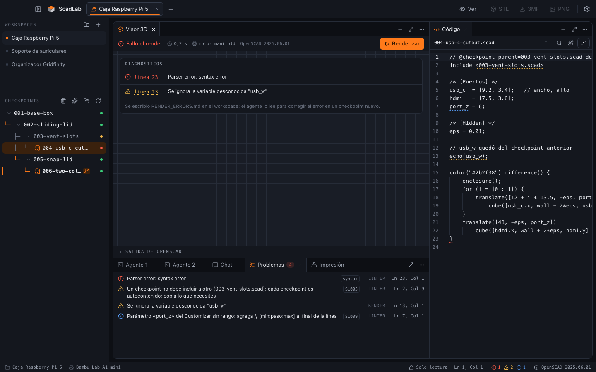
Problemas de un checkpoint roto: linter y render juntos, con clic a la línea.
Opciones
En Configuración → General → Editor de código: sangría (2 o 4 espacios), tamaño de letra,
ajustar las líneas largas y minimapa. El editor sigue al tema claro u oscuro de la app.
La ventana: paneles y barra de estado Disponible
El área de trabajo funciona como un editor de código: el visor 3D, el código, los agentes, el chat y
los problemas son paneles acoplables. Los mueves, los divides, los pones en pestañas, los
haces flotar o los ocultas, y ScadLab recuerda cómo los dejaste.
El diseño predeterminado: visor y código arriba, agentes, chat y problemas en pestañas debajo del visor. La barra de estado, abajo, resume dónde estás.
Los siete paneles
Panel
Qué es
Atajo
Visor 3D
La pieza del checkpoint abierto, con su estado de render y sus diagnósticos.
⌘⇧1 / Ctrl+Shift+1
Código
El editor OpenSCAD del checkpoint abierto.
⌘⇧2 / Ctrl+Shift+2
Agente 1 y Agente 2
Las dos terminales de agente de IA.
⌘⇧3 y ⌘⇧4
Chat
El chat con modelos.
⌘⇧5 / Ctrl+Shift+5
Problemas
Errores y advertencias del linter y del render.
⌘⇧6 / Ctrl+Shift+6
Impresión
Peso, filamento y costo estimados de cada parte del modelo. Ver Estimación de costo.
⌘⇧7 / Ctrl+Shift+7
Cada panel existe una sola vez: abrirlo de nuevo lleva al que ya está. La barra lateral (workspaces
y checkpoints) no es un panel: se queda a la izquierda y se pliega aparte.
Pestañas
Cada panel tiene su pestaña, con el aspecto de las de un editor: ícono y nombre en letra normal;
la pestaña activa se funde con su contenido y muestra la ×, y las demás, más oscuras, la muestran al
pasar el ratón. Algunas llevan un punto de estado en lugar de la ×: naranja en Código cuando
hay cambios sin guardar, verde en Agente mientras el agente está en marcha; al pasar el ratón el punto vuelve a
ser una ×. Problemas suma el número de entradas.
Arrastra una pestaña para reordenarla dentro de su grupo o llevarla a otro grupo.
Doble clic en una pestaña maximiza su grupo; otro doble clic lo restaura.
Clic derecho en la pestaña (o el botón ⋯ de la barra del grupo): Ocultar,
Ocultar los demás del grupo, Minimizar / Restaurar panel, Maximizar / Restaurar,
Mover a… y Flotar / Acoplar.
En la barra de cada grupo, a la izquierda de maximizar, el botón – lo
minimiza.
Con muchas pestañas en un grupo angosto, la barra se desplaza en horizontal (rueda o trackpad) y un menú lista
las que quedaron fuera de la vista.
Dividir y acoplar
Mientras arrastras una pestaña, sobre cada grupo aparece una zona resaltada: suéltala en el centro para
sumarla como pestaña de ese grupo, o en un borde (izquierda, derecha, arriba o abajo) para
dividir y que el panel quede en un grupo nuevo a ese lado. Así armas, por ejemplo, el chat al lado de
la terminal en vez de en pestañas.
Soltar en el borde de un grupo divide ese grupo. Para llevar un panel al borde de toda el área
(por ejemplo, el chat en una columna completa a la izquierda) usa Mover a…:
no depende de arrastrar.
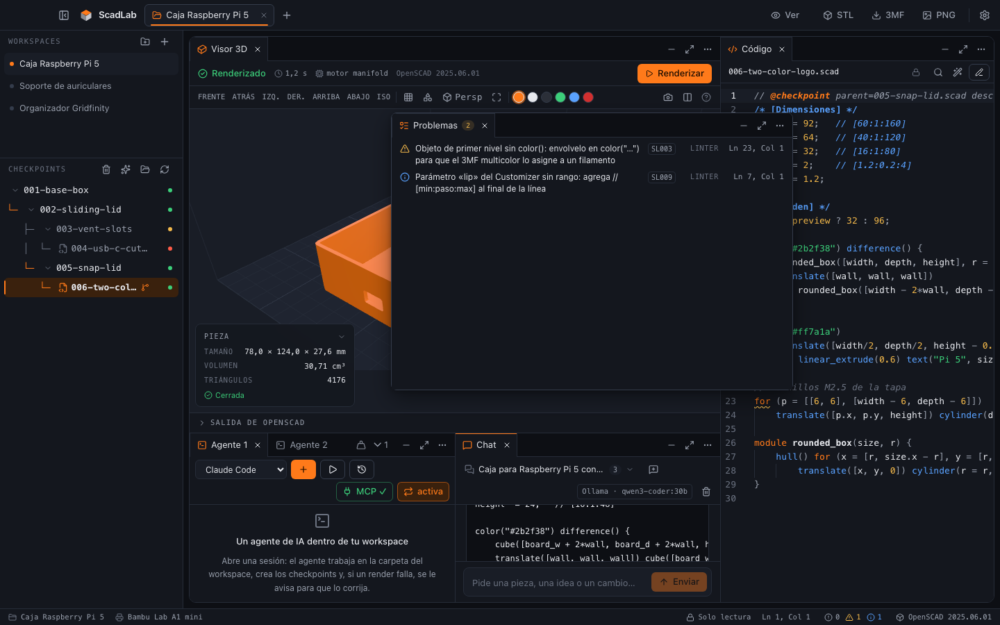
Un diseño propio: el chat dividido junto a las terminales y Problemas flotando sobre el visor.
Mover a… (sin arrastrar)
El menú ⋯ del grupo y el clic derecho de cada pestaña tienen Mover a…, con
destinos que funcionan siempre, sin arrastrar. Sirve para cualquier panel —Visor 3D, Código, Agente 1,
Agente 2, Chat y Problemas— y mover no destruye nada: solo cambia de lugar; el visor conserva su cámara, el
editor su texto y la terminal su agente.
Izquierda, Derecha, Arriba y Abajo: el panel va al
borde de toda el área de paneles. Si ya hay un grupo ocupando ese borde, entra a él como pestaña; si no, se
crea uno nuevo que abarca todo el borde.
Centro: como pestaña del grupo acoplado más grande (casi siempre el del visor).
Junto a…: lista los demás paneles que están a la vista; el elegido se suma como pestaña del
grupo de ese panel.
Flotar / Acoplar: saca el panel a una ventana flotante o lo devuelve a la grilla.
Un destino que no cambiaría nada (por ejemplo, Derecha para un panel que ya está solo en ese borde) aparece
apagado. Arrastrar la pestaña sigue funcionando para quien lo prefiera: mientras arrastras, el destino se marca con un
recuadro de color de acento con borde.
«Mover a…» del panel de código: cuatro bordes, el centro, «Junto a…» con los demás paneles, y Flotar.
Minimizar un panel
El botón – de la barra de cada grupo (Minimizar panel), ⌘⇧M /
Ctrl+Shift+M con el grupo activo o Ver → Minimizar panel lo achican sin cerrarlo:
Un grupo apilado arriba o abajo de otro queda reducido a su barra de pestañas.
Un grupo lado a lado con otro queda como una franja angosta con los íconos de sus
pestañas en vertical (un punto verde o naranja sigue a la vista si hay un agente en marcha o cambios sin guardar).
Un grupo flotante se reduce a su barra de pestañas.
Los demás paneles se reparten el espacio liberado. Para restaurar: un clic en cualquier pestaña o
ícono del grupo, el botón + (Restaurar panel) o un doble clic en el vacío de su barra; vuelve
exactamente a su tamaño anterior. Nada se destruye: es la misma regla de ocultar. Un grupo sin
otro al lado que ocupe su espacio no se puede minimizar (el botón sale apagado). Lo minimizado se guarda con el diseño,
también en los diseños con nombre.
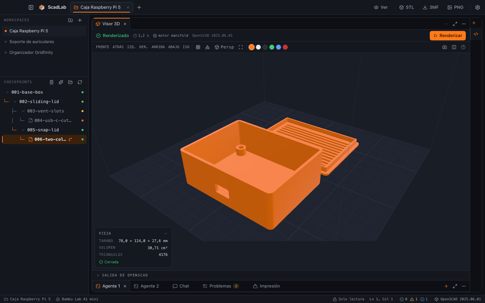
El código minimizado a una franja a la derecha y los agentes a su barra, abajo: el visor se queda con el resto.
Tamaño de los paneles
Todo borde entre dos grupos es un divisor que se arrastra en las dos direcciones: la línea es de
1 px, pero la zona para agarrarlo mide unos 6 px y el cursor cambia al pasar por encima.
Doble clic en un divisor reparte el espacio a partes iguales entre sus dos lados.
Ningún panel se puede dejar inutilizable: el visor no baja de unos 200 × 150 px, el código y las terminales
de unos 240 × 120 px (estas medidas crecen con el tamaño de la interfaz).
Los tamaños se guardan con el diseño, también en los diseños con nombre.
Si achicas la ventana, los grupos se reparten el espacio en proporción en vez de salirse de ella.
Paneles flotantes
Flotar (clic derecho en la pestaña) saca el panel a una ventana que va dentro de ScadLab,
encima de los demás. Se mueve arrastrando su barra de pestañas y se redimensiona desde cualquier borde o esquina,
sin poder salirse de la ventana. Acoplar lo devuelve a la grilla. Un grupo flotante puede llevar
varias pestañas.
Ventanas del sistema
Los paneles no se pueden sacar a una ventana nativa
de Windows o macOS (por ejemplo, para llevar el visor a un segundo monitor): ScadLab corre en una sola ventana
del sistema y los flotantes viven dentro de ella. Para trabajar en varios proyectos a la vez, usa las
pestañas de proyecto de la cabecera.
Ocultar y mostrar
Cualquier panel se oculta con la × de su pestaña, con su casilla del menú
Ver o con su atajo, y se vuelve a mostrar igual: reaparece junto a las pestañas con las que estaba. Ocultar
no destruye nada: el visor conserva su cámara, el editor su texto y su historial de deshacer, y la terminal su
pantalla y su agente, que sigue corriendo. Solo el botón × de la barra de la terminal termina al agente.
Si ocultas todos los paneles, el área de trabajo muestra una pantalla con botones para volver a abrirlos o
aplicar un diseño; nunca queda un hueco en blanco. La barra lateral y la barra de estado también se pueden ocultar,
y todo se recuerda al reabrir la app.
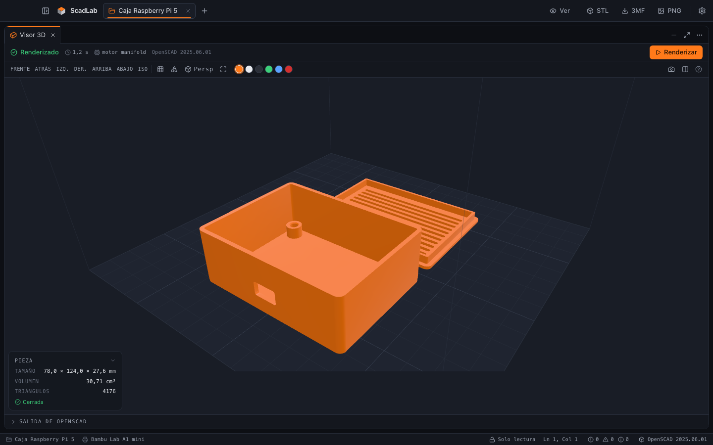
Solo el visor, con la barra lateral oculta: los demás paneles siguen vivos, solo fuera de la vista.
El menú Ver
El menú Ver de la cabecera reúne todo: una casilla por cada panel (con su atajo), la
barra lateral y la barra de estado, Maximizar panel, Minimizar panel, el Modo enfoque y
los diseños.
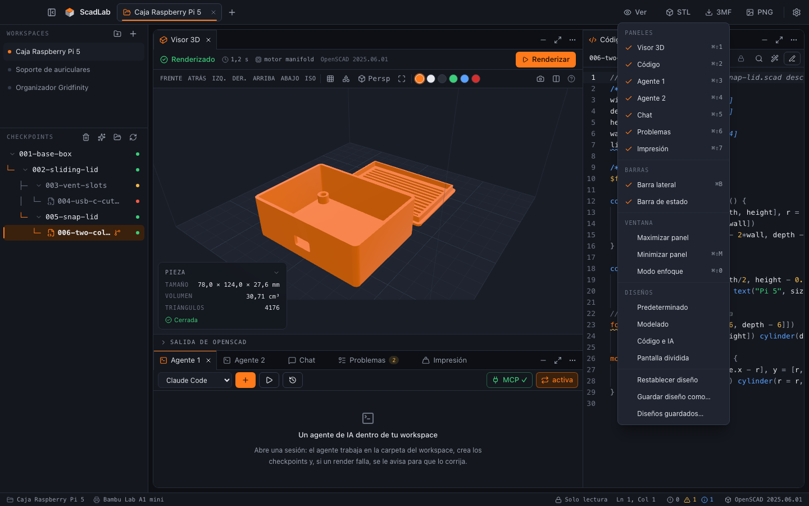
El menú Ver, con una casilla por panel y los diseños al final.
Diseños
Un diseño es dónde está cada panel y su tamaño. ScadLab trae cuatro:
Predeterminado: visor y código arriba; agentes, chat, problemas e impresión debajo.
Modelado: visor grande; código y agentes como pestañas a la derecha.
Código e IA: código grande, el agente al lado y el visor chico.
Pantalla dividida: visor y código a partes iguales, agentes abajo.
Restablecer diseño vuelve al predeterminado. Para guardar el tuyo, usa Ver → Guardar diseño
como…, ponle nombre (si ya existe uno igual, te pregunta antes de reemplazarlo) y aparecerá en el menú.
Ver → Diseños guardados… los lista para aplicarlos o borrarlos.
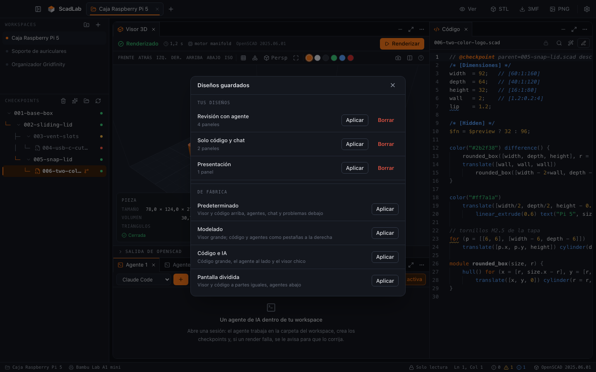
Diseños guardados: los tuyos (Aplicar / Borrar) y los de fábrica.
El diseño actual se guarda solo y se restaura al abrir la app. Si el diseño guardado estuviera dañado o fuera de una
versión distinta, ScadLab abre con el predeterminado en vez de fallar.
Modo enfoque
⌘⇧0 / Ctrl+Shift+0 (o Ver → Modo enfoque) deja solo el panel activo, sin
barra lateral, sin barra de estado y sin los demás paneles. Esc —o el mismo atajo, o el botón de la
esquina— vuelve exactamente al diseño anterior. Con el foco dentro del editor o de la terminal, Esc sigue
siendo de ellos: sal con el atajo.
Atajos
Atajo
Qué hace
⌘⇧1 … ⌘⇧7 (Windows: Ctrl+Shift+1 … 7)
Muestra y enfoca Visor, Código, Agente 1, Agente 2, Chat, Problemas o Impresión. Si ya está enfocado, lo oculta.
⌘⇧0 / Ctrl+Shift+0
Modo enfoque.
⌘⇧M / Ctrl+Shift+M
Minimiza o restaura el grupo de paneles activo.
⌘B / Ctrl+B
Pliega o muestra la barra lateral.
En macOS, el sistema reserva ⌘⇧3, ⌘⇧4 y ⌘⇧5 para las capturas de pantalla y no llegan a
ScadLab: para esos paneles usa ⌘⌥3, ⌘⌥4 y ⌘⌥5 (valen también para el resto) o el menú Ver. Los atajos
no pisan los del editor ni los de la terminal.
Ventanas pequeñas y letra grande
La ventana admite hasta 1024 × 640. Cuando un panel se queda sin espacio, sus barras se
adaptan en vez de cortar controles: los botones de la terminal, del editor y de la cabecera pasan a mostrar
solo el ícono (el nombre sigue en la ayuda emergente al pasar el ratón) y, si ni así caben, se
reparten en una segunda fila. La barra de pestañas y sus medidas también crecen con el
tamaño de la interfaz.
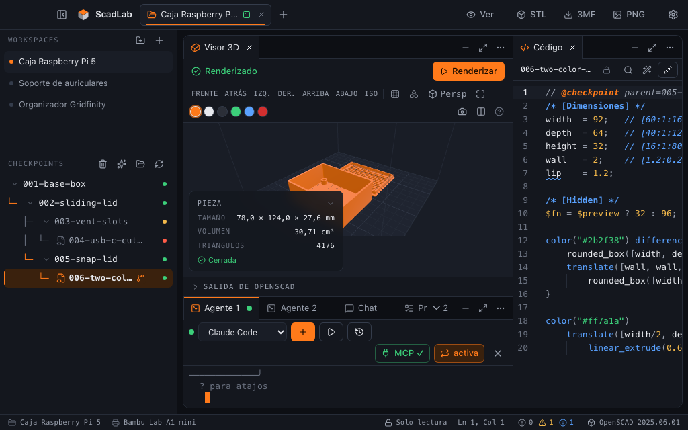
En la ventana mínima (1024 × 640) nada queda cortado: los grupos se reparten el espacio y las barras se adaptan.
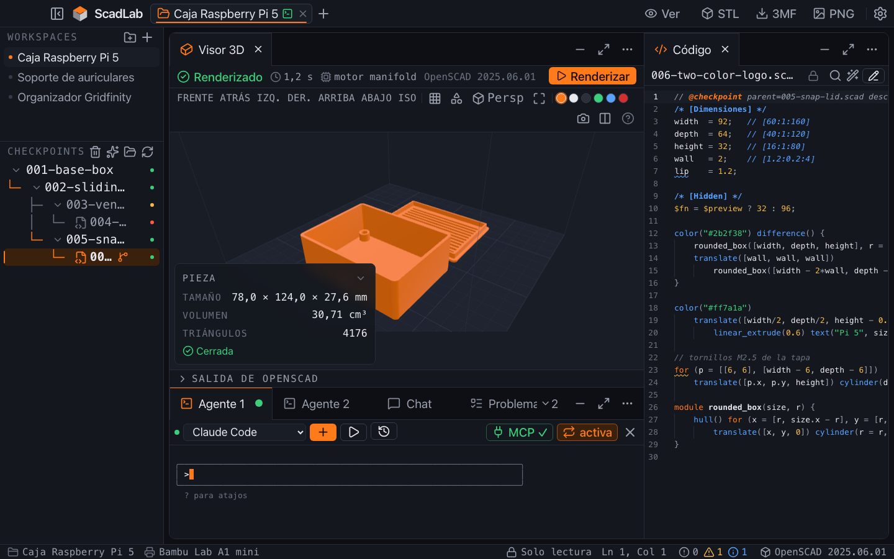
Con la interfaz al 150 %, las pestañas y los tamaños mínimos de los paneles crecen con ella.
Barra lateral plegable
El botón de la izquierda de la cabecera, ⌘B / Ctrl+B o la casilla del menú Ver oculta y muestra
la lista de workspaces y el árbol, para dejarle todo el ancho a los paneles. Su ancho, y el reparto entre workspaces y
checkpoints, se arrastran y se recuerdan.
Restablecer el diseño
Ver → Restablecer diseño devuelve los paneles al predeterminado. En Configuración → General,
Restablecer el diseño hace eso y además devuelve la barra lateral a su tamaño de fábrica y muestra las
barras ocultas. Más sobre la letra y la interfaz en Apariencia y tamaños.
Medidas del visor plegables
El panel de medidas de la pieza se pliega con su flecha: queda solo el tamaño en una línea. Útil en la vista
dividida, donde el panel completo tapaba la pieza.
La barra de estado
Workspace e impresora abiertos.
Modo del editor (solo lectura / edición, y si hay cambios sin guardar) y la posición del cursor.
Problemas: errores, advertencias y sugerencias del checkpoint abierto; un clic muestra el panel.
OpenSCAD: la versión con la que renderiza ScadLab, o el aviso si no lo encuentra. Sin OpenSCAD instalado muestra
la insignia WASM 2025.12.30 (el motor integrado); un clic abre Configuración → OpenSCAD.
Agentes en la terminal
Una terminal integrada ejecuta el agente que prefieras dentro del workspace. El agente escribe
checkpoints y tú los ves aparecer en el árbol, sin salir de ScadLab.
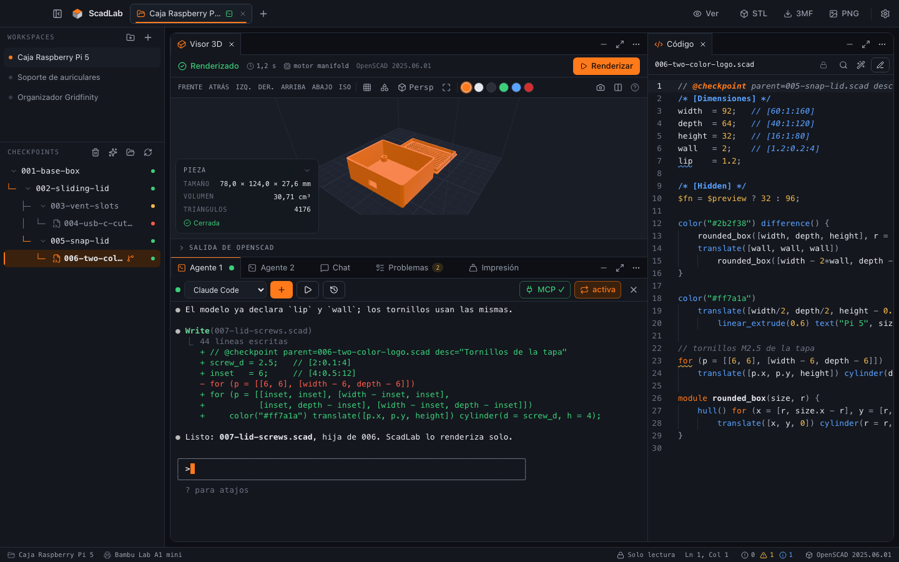
Claude Code escribiendo un checkpoint en la terminal del workspace. En la barra de arriba: agente, Nueva, Continuar, Sesiones y el interruptor de auto-iteración.
Abrir un agente
Debajo del visor hay, en pestañas, cuatro paneles: Agente 1, Agente 2,
Chat y Problemas
(puedes moverlos, ver La ventana).
Abre el panel de un agente y elige el agente en el selector.
Pulsa Nueva. El agente arranca en la carpeta del workspace, así que lo que cree aparece como
checkpoint en el árbol.
Escribe en la terminal lo que quieres, como en cualquier CLI. Para saber cómo pedirlo, mira
Cómo pedirle un modelo a la IA.
Si ya hay un agente corriendo en esa pestaña, ScadLab pregunta antes de cerrarlo para abrir otro. Los
checkpoints ya guardados no se tocan.
Qué agentes
Claude Code, opencode, Codex y Antigravity — solo los que estén instalados y habilitados en
Configuración → IA: la detección decide qué aparece en el selector. Si no hay
ninguno, la pestaña lo avisa con un botón que abre esa configuración. Para conversar con un modelo sin instalar
ningún CLI, está el chat con modelos.
En la barra del panel, el indicador MCP ✓ confirma que el agente dispone de las herramientas del
servidor MCP de ScadLab en este workspace.
Sesiones
Nueva abre una conversación limpia.
Continuar abre la última conversación de ese agente en este workspace.
Sesiones lista las conversaciones anteriores de ese agente en este workspace, con su título y
su fecha, para retomar la que elijas.
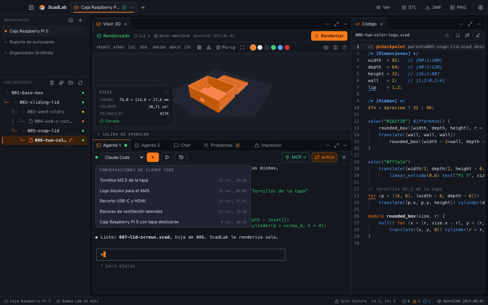
Menú Sesiones con las conversaciones previas de Claude Code en este workspace.
Antigravity
Antigravity no permite listar sus conversaciones, así que solo
ofrece Nueva y Continuar.
Si recargas la interfaz
Los agentes siguen vivos: al recargar la interfaz, cada terminal se vuelve a conectar a su agente y recupera
lo que tenía en pantalla. Cuando un agente termina por su cuenta, la terminal avisa con su código de salida y
puedes abrir otra sesión.
Copiar y pegar
⌘C (Ctrl+C en Windows) copia la selección.
En Windows, Ctrl+Csin selección interrumpe al agente, como en cualquier terminal.
En macOS, ⌃C siempre le llega al agente.
⌘V (Ctrl+V en Windows) pega; un texto de varias líneas se pega de una vez, no línea
por línea.
Maximizar el panel
El botón de la esquina de la barra del panel (o un doble clic en su pestaña) agranda su grupo hasta cubrir toda el
área de trabajo, útil para leer una respuesta larga; pulsarlo otra vez devuelve el tamaño normal.
Límites
Hasta 2 terminales de agente a la vez —por ejemplo una con Claude Code y otra con Codex
comparando enfoques—. El × de la barra cierra la terminal y termina el agente.
Reglas del workspace: CLAUDE.md y AGENTS.md
Cada workspace lleva un archivo de reglas que el agente lee al empezar. Es lo que garantiza
que el historial no se rompa, use el agente que use.
Qué archivo lee cada agente
CLAUDE.md — Claude Code.
AGENTS.md — opencode, Codex y Antigravity.
Las reglas obligatorias
Nunca sobrescribir ni borrar un .scad: cada cambio es un checkpoint nuevo.
Usar colores: toda pieza de primer nivel dentro de color(...).
Validar cada checkpoint con las herramientas del servidor MCP de ScadLab (o con OpenSCAD por línea de comandos si no están) antes de darlo por terminado.
Parámetros arriba, con comentarios de Customizer; todo en milímetros.
Respetar printer.json: el modelo tiene que caber en la placa.
Consejo
Puedes añadir reglas propias al final del archivo —«usa
siempre insertos M3 de 4,2 mm», «nada de voladizos mayores de 45°»—, pero no quites las obligatorias: son las
que mantienen el árbol de checkpoints coherente.
Tus notas no se pisan
Las reglas de ScadLab van dentro de un bloque marcado en CLAUDE.md y AGENTS.md
(entre <!-- scadlab:rules:begin --> y <!-- scadlab:rules:end -->). Cada vez que
abres el workspace, ScadLab actualiza solo ese bloque con las reglas de la versión actual (por
ejemplo, las herramientas MCP o las ramas): lo que escribas antes o después del bloque queda como está.
Si el archivo lo había creado una versión anterior de ScadLab (sin marcas), se guarda una copia en
.scadlab/backup/ antes de reemplazarlo, por si lo habías editado.
Si importas una carpeta que ya tenía su propio CLAUDE.md, el bloque se agrega arriba y tus
instrucciones quedan debajo, intactas.
Servidor MCP de ScadLab
Un servidor MCP que le da al agente herramientas para renderizar, validar, medir y ver
sus modelos con el mismo OpenSCAD y el mismo motor que usa la app. ScadLab lo deja configurado solo en cada
workspace para Claude Code y opencode, y se lo pasa a Codex por flags; Antigravity solo tiene
configuración global, así que se agrega con un botón y tu permiso.
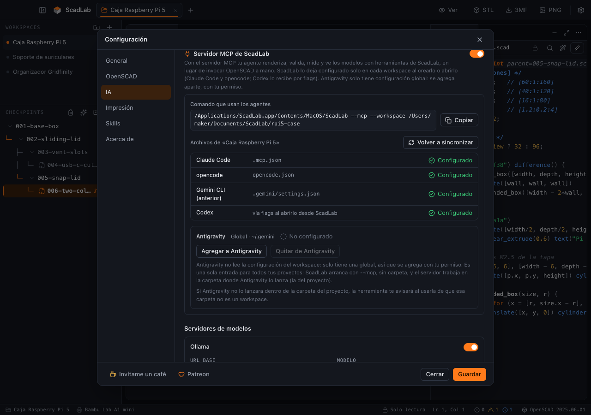
Configuración → IA: el interruptor, el comando que usan los agentes, el estado de los archivos del workspace abierto y la fila de Antigravity (configuración global) con sus botones.
Qué es y para qué sirve
MCP (Model Context Protocol) es la forma estándar de darle herramientas a un agente de IA. El servidor
de ScadLab es el propio programa lanzado como ScadLab --mcp --workspace <carpeta>: no abre ninguna
ventana, trabaja sobre los archivos del workspace y funciona aunque la app esté cerrada (por
ejemplo, con un agente lanzado desde una terminal externa).
Sin él, el agente tiene que adivinar si su código compila y cómo quedó la pieza. Con él lo comprueba antes de
decirte que terminó: renderiza, lee los diagnósticos con su línea, mide la pieza, mira cómo se ve y la exporta.
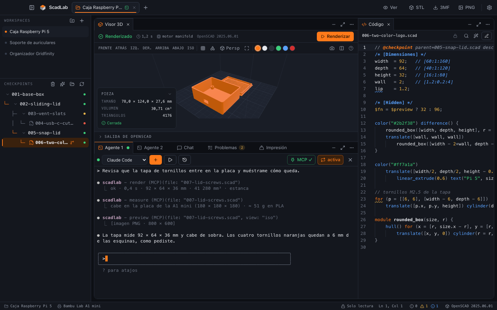
Claude Code usando las herramientas de ScadLab: renderiza, mide y mira la pieza. En la barra del panel, el indicador «MCP ✓».
Qué herramientas tiene
Herramienta
Qué hace
list_checkpoints
El árbol del workspace: archivo, padre, descripción y último estado de render conocido.
read_checkpoint
Devuelve el código de un checkpoint.
create_checkpoint
Crea un checkpoint nuevo (NNN-slug.scad, con su encabezado) a partir de un padre. Nunca sobrescribe uno existente.
render
Renderiza un checkpoint (por defecto, el más nuevo) y devuelve el estado, los diagnósticos con su línea, la duración, el tamaño, el volumen, los triángulos, si es estanco y si cabe en la placa. Escribe o borra RENDER_ERRORS.md con la misma regla que la app.
lint
Los diagnósticos del linter (OpenSCAD y las reglas SL001–SL009) de un archivo o de un código suelto.
format
Devuelve el código formateado; no escribe archivos.
measure
Medidas de la pieza, volumen de la impresora, si cabe y el peso estimado con el material por defecto (sólido al 100 %).
preview
Una imagen PNG de la pieza (isométrica, frente, arriba, derecha…) renderizada con OpenSCAD, para que el agente vea lo que modeló.
printer_info
La impresora del workspace: volumen, boquilla, ranuras del AMS y reglas clave.
export
Exporta a STL, 3MF o STL por color en la carpeta exports/ del workspace, con las partes y los avisos.
list_templates / get_template
Lista y lee las plantillas de openscad-templates.
Todas las rutas se resuelven dentro del workspace, un checkpoint nunca se sobrescribe ni se
borra, y lo único que se escribe fuera de él es la caché de mallas.
Cómo se configura en cada CLI
Al crear, importar o abrir un workspace, ScadLab escribe la entrada scadlab en el archivo de
configuración del proyecto que lee cada CLI. Nunca toca la configuración global de tu usuario por
su cuenta; la única excepción es Antigravity, y solo cuando tú lo pides (ver más abajo).
CLI
Archivo en el workspace
Entrada
Claude Code
.mcp.json
mcpServers.scadlab
opencode
opencode.json
mcp.scadlab
Gemini CLI (anterior)
.gemini/settings.json
mcpServers.scadlab
Codex
— (no lee configuración de proyecto)
flags al lanzarlo, ver abajo
Antigravity
— (solo configuración global; ver abajo)
botón Agregar a Antigravity
Ojo
.gemini/settings.json es el archivo del Gemini
CLI anterior (gemini), el que Antigravity reemplazó. Antigravity (agy) no lo
lee: lo comprobamos con agy mcp list, que con ese archivo en el proyecto sigue diciendo «No MCP
servers configured». ScadLab lo sigue escribiendo para quien todavía usa gemini, pero para Antigravity
hace falta el botón.
En todos el comando es el mismo: el ejecutable de ScadLab con --mcp --workspace y la carpeta del
workspace. Si mueves la app o la actualizas, la ruta del ejecutable cambia: ScadLab la corrige la próxima vez que
abras el workspace.
Lo que ScadLab respeta de tus archivos
Fusiona solo la clave scadlab: el resto del archivo —tus otros servidores,
tus ajustes, el orden y la sangría— queda exactamente como estaba. Si añadiste campos propios a la entrada
(un timeout, por ejemplo), se conservan.
Si el archivo no es un JSON válido (o el bloque no es un objeto), no lo toca:
lo marca como «No se tocó» en Configuración → IA para que lo arregles tú.
Si tu proyecto tiene un opencode.jsonccon comentarios y ningún
opencode.json, tampoco lo toca (editarlo borraría tus comentarios): agrega la entrada a mano
con el comando que muestra Configuración → IA.
Sincronizar varias veces no cambia nada si ya estaba al día: no se reescribe el archivo.
Codex: por flags al abrirlo desde ScadLab
Codex no lee configuración de proyecto. Por eso, cuando lo abres en la terminal de ScadLab, la app le añade al
arrancar dos flags -c con el comando del servidor
(mcp_servers.scadlab.command y mcp_servers.scadlab.args). Solo vale para el Codex que
abres desde ScadLab; si lo lanzas por tu cuenta en otra terminal, no verá el servidor.
Antigravity: configuración global, con tu permiso
Antigravity no lee configuración de proyecto ni acepta pasarle un servidor al arrancar: su única configuración
de servidores MCP es global (carpeta ~/.gemini) y se maneja con el comando
agy mcp. Por eso ScadLab no la toca sola. En Configuración → IA → Servidor MCP de
ScadLab hay una fila Antigravity con su estado y dos botones:
Agregar a Antigravity: antes de hacer nada te avisa de que va a modificar la
configuración global de Antigravity, es decir, la de todos tus proyectos y no solo este
workspace. Si aceptas, ejecuta agy mcp add con el ejecutable de ScadLab y --mcp. Si ya
había un servidor scadlab con otra ruta (porque moviste la app), lo reemplaza; tus otros servidores no
se tocan.
Quitar de Antigravity: igual, con confirmación; ejecuta agy mcp remove scadlab.
El estado puede ser agy no instalado, No configurado, Configurado, Otra ruta
(la app se movió: «Agregar» lo corrige), Desactivado o No se pudo leer; sale de
agy mcp list.
La entrada global es scadlab → <ScadLab> --mcp, sin
--workspace: el servidor usa la carpeta desde la que se lanza, y Antigravity lo lanza en la
carpeta del proyecto, así que una sola entrada sirve a todos tus workspaces. Ese es el punto
delicado: si en tu versión de Antigravity el servidor no se lanzara dentro de la carpeta del proyecto, la herramienta
te lo dirá al usarla (esa carpeta no sería un workspace). En ese caso, quítalo desde aquí y agrégalo a mano con
--workspace.
Claude Code: sin aprobación cuando lo abres desde ScadLab
Un servidor que viene en el .mcp.json del proyecto queda pendiente de aprobación hasta que
Claude Code te pregunta, la primera vez, si confías en él (lo comprobamos con claude mcp list:
«Pending approval»). Para no frenarte, cuando abres Claude Code en la terminal de ScadLab la app le pasa el servidor
con --mcp-config, que no necesita esa aprobación. Si lo abres por tu cuenta en otra terminal, se usa el
.mcp.json y Claude te pregunta una sola vez.
Encenderlo, apagarlo y sincronizar
En Configuración → IA → Servidor MCP de ScadLab:
El interruptor lo enciende o apaga para todos los workspaces. Apagado, ScadLab quita su
entrada de los archivos (y borra el archivo si solo existía por ella) y deja de pasarle los flags a Codex.
Viene encendido.
El comando que usan los agentes se puede copiar, por si quieres configurar un CLI que ScadLab
no conoce.
Para el workspace abierto se ve el estado de cada archivo: Configurado, Falta,
Desactualizado (la app se movió) o No se tocó. Volver a sincronizar repite la
escritura sin esperar a que abras el workspace.
La fila de Antigravity es aparte porque su configuración es global: se agrega o se quita con
sus botones, ver Antigravity. El interruptor y «Volver a sincronizar» no la
tocan.
Si ScadLab no encuentra OpenSCAD, el bloque lo avisa: render, preview y
export no funcionan hasta que lo instales o indiques su ruta en la pestaña
OpenSCAD.
El indicador «MCP ✓»
En la barra de cada panel de agente, a la izquierda de la auto-iteración, MCP ✓ dice que el
servidor está configurado en este workspace. Pasa a MCP ! (en ámbar) si algún archivo no quedó al
día y a MCP apagado si lo apagaste. Un clic abre Configuración → IA con el detalle.
Cómo comprobar que un agente lo ve
Abre una terminal normal en la carpeta del workspace.
Para Claude Code, corre claude mcp list: scadlab aparece como Connected o,
si todavía no lo aprobaste, como Pending approval (se aprueba la primera vez que abres
claude en esa carpeta). Dentro de una sesión, el comando /mcp muestra el estado real.
Para opencode, corre opencode debug config y busca scadlab dentro de
mcp. Su opencode mcp list solo lista servidores dentro de un repositorio git: en un
workspace que no es repositorio puede decir que no hay ninguno aunque la sesión sí lo use.
Para Antigravity, corre agy mcp list en cualquier carpeta: scadlab tiene que salir
como enabled con la ruta de ScadLab y --mcp. No sirve mirar el workspace: agy no lee
.gemini/settings.json.
Para Codex, ábrelo desde la terminal de ScadLab y pídele que use la herramienta render (o que
liste sus herramientas): fuera de ScadLab no recibe el servidor.
Si un CLI no lo ve
Claude Code te pide aprobar el servidor. Es normal: la primera vez que abre un proyecto con
.mcp.json pregunta si confías en él. Acéptalo.
El archivo aparece como «No se tocó». Tiene un JSON roto o un formato que ScadLab no se
atreve a editar. Corrígelo (o agrega la entrada a mano con el comando que muestra Configuración → IA) y pulsa
Volver a sincronizar.
Aparece como «Desactualizado». Moviste o actualizaste la app y la ruta cambió: pulsa
Volver a sincronizar.
Abriste el CLI con la app cerrada. Funciona igual (el servidor es la propia app lanzada sin
ventana), pero la ruta que dice el archivo tiene que seguir existiendo.
Codex no lo ve. Ábrelo desde la terminal de ScadLab: solo ahí recibe los flags.
Antigravity no lo ve. Pulsa Agregar a Antigravity en Configuración → IA: con el
archivo del workspace no basta. Si dice agy no instalado, instala Antigravity o revisa que el comando
agy exista en tu equipo.
Las herramientas fallan al renderizar. Revisa que ScadLab encuentre OpenSCAD (pestaña
OpenSCAD de la configuración).
Auto-iteración de errores
Si un checkpoint no renderiza, ScadLab se lo dice al agente y le pide que lo corrija — sin
que tengas que copiar el error.
Qué hace
Cuando un agente crea un checkpoint, ScadLab lo renderiza solo y, si falla, deja
RENDER_ERRORS.md en el workspace. Si además hay un agente abierto en ese
workspace, le escribe un aviso en su terminal para que lo lea y lo arregle. Detalle del archivo en
Renderizar y diagnósticos.
Cómo funciona
El agente crea 004-add-hinge.scad y ScadLab lo renderiza.
OpenSCAD falla. ScadLab escribe RENDER_ERRORS.md en el workspace con el archivo, la línea y el mensaje.
ScadLab escribe en la terminal del agente un aviso de una línea que pide leer RENDER_ERRORS.md y corregir.
El agente crea 005-fix-hinge.scad con parent=004-…. El 004 queda como estaba.
# RENDER_ERRORS.md
Archivo: 004-add-hinge.scad
ERROR: Parser error in file 004-add-hinge.scad, line 31: syntax error
Corrige el error en un checkpoint NUEVO con parent=004-add-hinge.scad.
El aviso que ve el agente empieza siempre por «ScadLab:», para que ningún CLI lo tome por un comando:
ScadLab: el render de "004-add-hinge.scad" falló con 1 error. Lee RENDER_ERRORS.md y corrígelo en un checkpoint NUEVO con parent=004-add-hinge.scad; no edites el archivo que falló.
Por qué un checkpoint nuevo
Corregir en el lugar rompería la regla de
inmutabilidad y perderías la pista de qué intentó la IA. Así el árbol muestra también los tropiezos.
Cuándo avisa y cuándo no
Solo avisa cuando falla el render del checkpoint más nuevo. Renderizar uno viejo mientras
recorres el historial no le manda nada al agente.
Avisa una vez por fallo: si el mismo error se repite, no insiste.
Tras 5 avisos seguidos sin un render correcto, deja de avisar para no gastar la cuota de tu
agente en un bucle. Vuelve a funcionar en cuanto un render sale bien.
Un render cancelado, o sin OpenSCAD instalado, no cuenta como fallo del modelo y no avisa.
Sin ningún agente abierto en ese workspace, no hay a quién avisar: queda RENDER_ERRORS.md para
cuando abras uno.
El interruptor Auto-iteración, en la barra de la terminal, la enciende o la apaga (viene
activa). Apagada, el agente no recibe avisos; RENDER_ERRORS.md se sigue escribiendo.
Chat con modelos: Ollama, OpenAI y Anthropic
La pestaña Chat conversa con un modelo para pensar ideas y pedir código OpenSCAD,
y cada bloque de código se guarda como checkpoint con un clic.
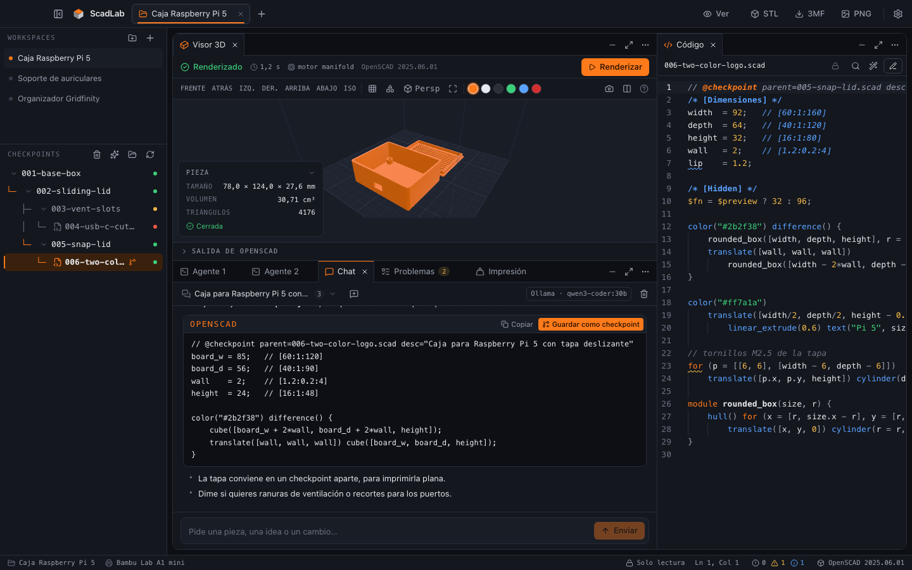
Una respuesta del modelo con su bloque de OpenSCAD: Copiar y Guardar como checkpoint.
Chat o terminal
El chat solo conversa: el modelo no
toca tus archivos ni renderiza. Para que la IA edite el workspace, cree checkpoints y se corrija sola, usa un
agente en la terminal.
La URL del servidor (por defecto http://localhost:11434)
Compatible con OpenAI
La URL del servidor y la variable de entorno con su API key — LM Studio, vLLM, OpenRouter…
Anthropic
La variable de entorno con tu API key
Las claves no se guardan: ScadLab solo guarda el nombre de la variable de entorno y lee la
clave de ahí cuando la necesita. Funciona también si la definiste en ~/.zshrc, aunque abras la app
desde el Finder.
Preparar Ollama
Si eliges el modelo local, instala Ollama y descarga uno:
ollama pull qwen2.5-coder:14b # o el modelo de código que prefieras
ollama serve # si no está corriendo ya
Con Ollama no hay cuenta, ni coste por token, ni sale nada de tu equipo. Los modelos locales pequeños se
equivocan más con la geometría.
Empezar un chat
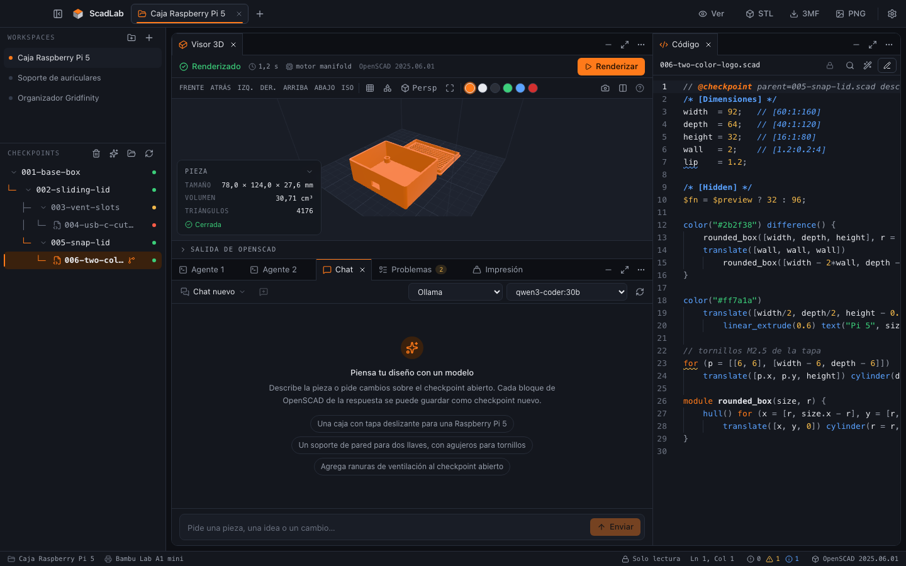
Un chat nuevo: eliges proveedor y modelo, y escribes abajo.
Abre la pestaña Chat y pulsa Chat nuevo.
Elige el proveedor y el modelo. La lista de modelos sale del servidor; si no
responde, escribe el nombre del modelo a mano.
Escribe lo que quieres y envía con Enter (Mayús+Enter agrega una línea).
El modelo queda fijo en ese chat; para probar otro, empieza un chat nuevo. El historial de chats
queda guardado por workspace, y puedes cambiar de conversación o borrar una desde la barra del chat.
Qué sabe el modelo de tu workspace
El checkpoint abierto: su código, hasta unos 12 KB.
Los checkpoints que ya existen, para sugerir el nombre del siguiente.
Los datos de tu impresora: el volumen de impresión y los colores del AMS.
Además lleva instrucciones propias sobre las reglas de checkpoints, el color por pieza y el diseño para FDM.
No ve nada más: ni tus otros archivos ni el visor.
La respuesta
Llega en streaming, palabra a palabra. Detener corta la respuesta en el acto y
conserva lo que ya se escribió.
Cada bloque de OpenSCAD trae dos botones:
Copiar: lleva el código al portapapeles.
Guardar como checkpoint: aparece cuando el bloque terminó de llegar. Te pide un rótulo y
crea un checkpoint nuevo, hijo del archivo abierto o, si no hay ninguno abierto, del último checkpoint.
Si no hay proveedores habilitados
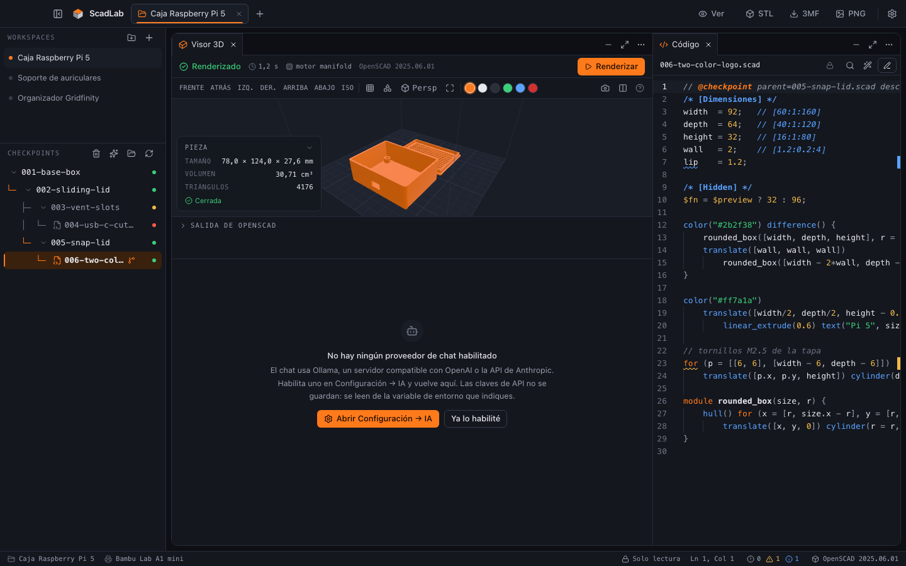
Sin proveedores habilitados, el chat lo avisa y te lleva a Configuración → IA.
El chat lo avisa con un botón que abre Configuración → IA. Habilita un proveedor, vuelve al panel y pulsa
Ya lo habilité.
Cómo pedirle un modelo a la IA
La IA no ve tu pieza ni tu impresora: lo que no le digas lo va a suponer. Estos patrones
funcionan con cualquier agente.
Da medidas y holguras
Soporte de pared para un taladro. La empuñadura mide 45 mm de diámetro; deja 1 mm de
holgura. Dos agujeros avellanados para tornillos de 4 mm, separados 60 mm.
Di cómo se imprime
Debe imprimirse sin soportes, apoyado en la cara trasera. Ningún voladizo de más de 45°.
Pide colores por pieza
Placa con mi nombre «LUCÍA»: base de 80×25×3 mm en blanco y el texto en relieve de 1 mm en
negro, para imprimirla con el AMS lite.
Pide parámetros
Haz que el ancho, el alto y el grosor de pared sean parámetros con rango para el Customizer.
Así luego cambias medidas sin pedirle nada más a la IA.
Parte de una plantilla
Usa la plantilla de caja de electrónica para un Arduino Nano con un hueco para el USB-C en
el lado corto.
Instrucciones empaquetadas que le enseñan al agente a escribir OpenSCAD correcto e imprimible
en Bambu Lab. Se copian a cada workspace para todos los CLIs.
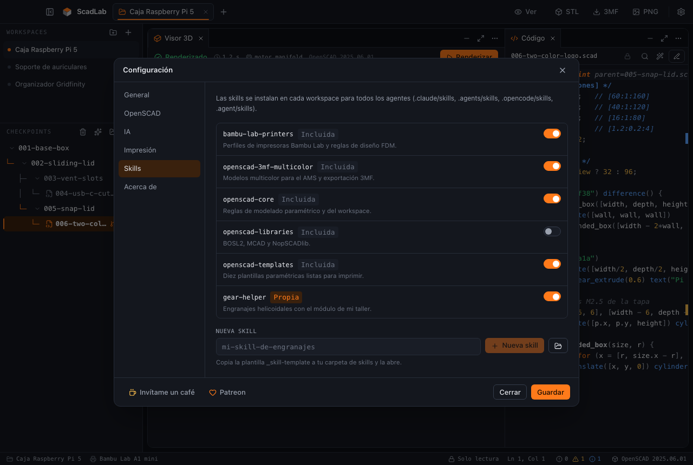
Configuración → Skills: incluidas y propias, cada una con su interruptor.
Dónde se copian
Carpeta
La lee
.claude/skills
Claude Code
.agents/skills
Codex y otros agentes compatibles
.opencode/skills
opencode
.agent/skills
Antigravity
Cada skill es una carpeta con un SKILL.md (cuándo usarla y sus reglas) más
references/ y templates/ que el agente carga solo cuando hacen falta.
Las cinco skills
openscad-core
La base: checkpoints inmutables, color obligatorio, parámetros de Customizer, CSG limpio, rendimiento y cómo leer errores. Si otra skill la contradice, gana esta.
bambu-lab-printers
Perfiles de A1 mini, A1, P1P, P1S, P2S, X1C, X1E, H2D y H2S (volumen, boquilla, AMS) y reglas FDM: voladizos, holguras, insertos, texto mínimo.
openscad-3mf-multicolor
Modelos para AMS: una pieza por color(), cómo exportar a 3MF y cómo lo interpreta Bambu Studio.
openscad-templates
Plantillas paramétricas para arrancar un proyecto sin partir de cero.
openscad-libraries
Cuándo y cómo usar BOSL2, MCAD y NopSCADlib desde la carpeta lib/ del workspace.
Plantillas de openscad-templates
Caja con tapa
Caja de electrónica
Soporte de pared
Clip de cable
Perilla
Engranaje
Bisagra print-in-place
Soporte de teléfono
Placa con nombre bicolor
Bin Gridfinity
Pídelas por su nombre: «arranca con la plantilla de bin Gridfinity, 2×3 unidades y 6 de alto».
Actualizaciones
Las skills viajan dentro de la app: al actualizar ScadLab y abrir un workspace, se copian las versiones
nuevas. Tus skills propias no se tocan.
Crear tu propia skill Disponible
Si siempre le explicas lo mismo al agente —tus tornillos, tu estilo, tus piezas estándar—,
conviértelo en una skill y deja de repetirlo.
Nueva skill: se escribe el nombre en kebab-case y se crea desde la plantilla.
Crearla desde Configuración
Ve a Configuración → Skills y pulsa Nueva skill.
ScadLab parte de la plantilla _skill-template: te pide nombre (kebab-case) y descripción.
Edita el SKILL.md generado. Al abrir cualquier workspace, la skill se copia junto con las incluidas.
El formato de SKILL.md
---
name: mis-insertos-m3
description: Medidas de agujeros para insertos térmicos y tornillos M3 de mi taller.
Úsala SIEMPRE que el modelo lleve tornillos, insertos o tuercas.
---
# Insertos y tornillos M3
- Inserto térmico M3 × 5 mm: agujero de 4,2 mm, profundidad 5,5 mm.
- Paso de tornillo M3: 3,4 mm. Cabeza avellanada: 6,5 mm a 90°.
- Tuerca M3 cautiva: hexágono de 6,4 mm entre caras, 2,6 mm de alto.
Consejos
La description dice cuándo usarla: es lo que hace que el agente la cargue.
Mantén el SKILL.md corto; lo extenso va en references/ y el código listo para copiar en templates/*.scad.
No contradigas a openscad-core: sus reglas son el contrato con la app.
Impresoras Bambu Lab
Cada workspace tiene su impresora, y con ella el volumen de impresión que el modelo tiene que
respetar.
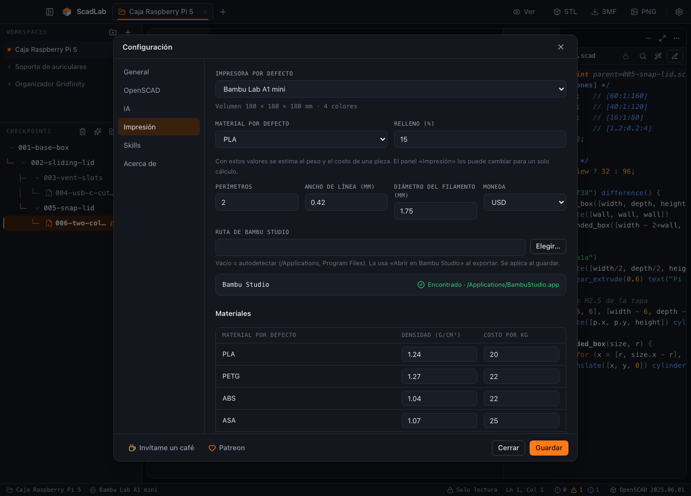
Configuración → Impresión: impresora por defecto con su volumen, material y relleno.
Perfiles incluidos
Impresora
Volumen (mm)
Multicolor
A1 mini
180 × 180 × 180
AMS lite (4)
A1
256 × 256 × 256
AMS lite (4)
P1P / P1S
256 × 256 × 256
AMS, hasta 4 unidades
P2S
256 × 256 × 256*
AMS / AMS 2 Pro
X1 Carbon / X1E
256 × 256 × 256
AMS, hasta 4 unidades
H2D
325 × 320 × 325*
AMS 2 Pro / AMS HT
H2S
340 × 320 × 340*
AMS 2 Pro / AMS HT
* Valores nominales pendientes de confirmar con la ficha oficial. Deja siempre 2–5 mm de margen.
printer.json
La impresora del workspace se guarda en printer.json, que también leen los agentes:
Si la caja envolvente del checkpoint supera el volumen de la impresora, el visor dibuja la placa y avisa
qué eje se pasa. La IA recibe la misma regla: pídele «que quepa en la A1 mini» y lo tendrá en cuenta.
Si el modelo no entra en la placa de la impresora del workspace, el visor marca la cama en rojo y dice cuántos
milímetros sobran en cada eje, con sugerencias (rotarlo, partirlo o elegir otra impresora). El mismo aviso aparece en
la barra de estado. Ver Estimación de costo.
Una pieza que no cabe en la A1 mini: la cama en rojo y lo que sobra por eje.
Reglas de diseño FDM
El resumen de lo que la skill bambu-lab-printers le exige al agente — y lo que
conviene recordar al pedir una pieza. Valores para boquilla de 0,4 mm.
Tema
Regla práctica
Voladizos
Hasta 45° sin soporte. Más inclinado: chaflán, cambiar la orientación o partir la pieza.
Puentes
Cortos (≈ 10–20 mm) salen bien; los largos se descuelgan.
Paredes
Mínimo 0,8 mm; 1,2–2 mm para piezas que trabajan. Múltiplos de 0,4 mm.
Holguras de encaje
0,2 mm ajustado, 0,3 mm deslizante, 0,4–0,5 mm para print-in-place.
Agujeros horizontales
Forma de gota (teardrop) para que no necesiten soporte.
Insertos térmicos M3
Agujero ≈ 4,0–4,2 mm según el fabricante del inserto.
Texto
Al menos 4–5 mm de alto y 0,6–1 mm de relieve o hundido.
Primera capa
Chaflán de 0,4 mm en el borde inferior contra la «pata de elefante».
Piezas altas y finas
En impresoras de cama móvil (A1, A1 mini) orientar el lado largo en Y o añadir orejas.
Ejemplo: agujero en gota
module teardrop_hole(d = 5, len = 20) {
rotate([90, 0, 0]) linear_extrude(len, center = true)
hull() {
circle(d = d, $fn = 48);
rotate(45) square(d / 2); // punta a 45°: imprime sin soporte
}
}
Exportar STL, 3MF y PNG Disponible
Tres botones en la cabecera exportan el checkpoint seleccionado. Están activos cuando ese checkpoint
tiene un render correcto; si no, siguen apagados y su descripción (pasa el ratón) dice por qué.
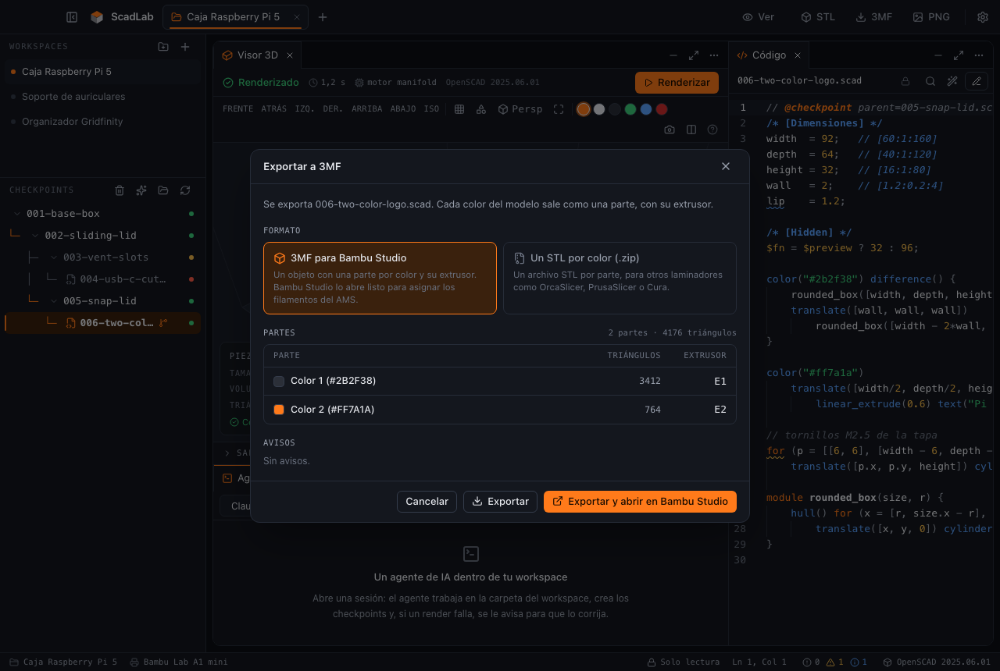
El diálogo de 3MF: una fila por parte, con su color, sus triángulos y el extrusor que le toca.
Botón
Atajo
Qué genera
Cuándo usarlo
STL
⇧⌘E / Ctrl+Shift+E
La malla del render, de un solo cuerpo y sin color. Abre directo el diálogo de guardar
Piezas de un color, o para otros laminadores
3MF
⌘E / Ctrl+E
Abre el diálogo de exportación: una parte por color, cada una con su extrusor
Multicolor con AMS, o para conservar las piezas separadas
PNG
—
Imagen de la vista activa del visor, tal como se ve
Documentar o compartir el diseño
El diálogo de 3MF
Antes de elegir dónde guardar, el diálogo te muestra qué va a salir. La primera vez OpenSCAD
renderiza el modelo con sus colores (unos segundos; después queda en caché) y la tabla lista:
Una parte por cada color() del modelo, con su muestra de color, su nombre y su
cantidad de triángulos. La geometría sin color() sale como una parte más, Default
(amarillo), y el diálogo la marca como «sin color()».
El extrusor (E1, E2…) que Bambu Studio le asigna a cada parte, en el orden en que aparecen
los colores en el modelo.
Avisos, que no impiden exportar: más colores de los que admite la impresora del workspace
(por ejemplo, cinco colores en una A1 mini, que admite cuatro a la vez), geometría sin color(), o dos
colores casi iguales que usarían dos filamentos distintos.
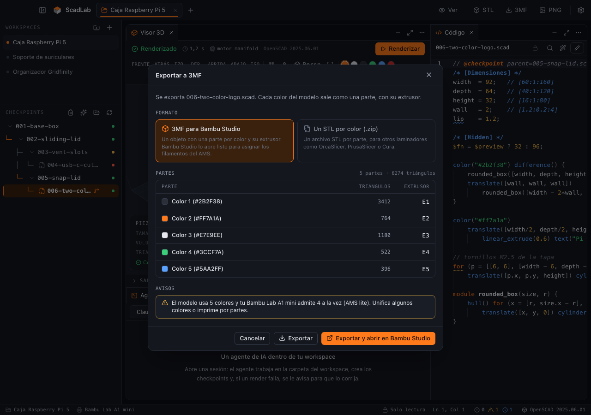
Cinco colores en una A1 mini: el aviso lo dice antes de exportar, y la exportación sigue disponible.
Los tres formatos
Formato
Cómo sale
Para qué
STL
Un solo archivo .stl, sin color
Una pieza de un solo color; cualquier laminador
3MF para Bambu Studio
Un objeto con una parte por color y su extrusor, en un .3mf
Multicolor con AMS: Bambu Studio lo abre listo para asignar filamentos
Un STL por color
Un .zip con un .stl por parte
OrcaSlicer, PrusaSlicer, Cura u otro que no lee las partes del 3MF
El nombre que propone el diálogo de guardar es <workspace>-<checkpoint> con la extensión del
formato, y abre en la carpeta exports/ del workspace si existe.
Tras exportar
Un aviso te dice dónde quedó el archivo y te ofrece dos botones: Mostrar en el Finder
(Explorador en Windows) y, si ScadLab encontró Bambu Studio, Abrir en Bambu Studio.
En el diálogo de 3MF, Exportar y abrir en Bambu Studio hace las dos cosas de una vez. Bambu Studio
solo se abre cuando tú lo pides con uno de esos botones, nunca solo.
Abrir en Bambu Studio
ScadLab busca la app en su ruta de instalación (macOS: /Applications/BambuStudio.app o la misma
carpeta dentro de tu ~/Applications; Windows: Program Files\Bambu Studio). Si la tienes en
otro lado, indícala en Configuración → Impresión → Ruta de Bambu Studio. Si no
está, el botón no aparece y el diálogo te lleva a esa configuración.
Comprueba el 3MF en Bambu Studio
La primera vez que exportes un modelo multicolor, vale la pena hacer esta comprobación a mano:
Abre el archivo en Bambu Studio (con Abrir en Bambu Studio, o con Archivo → Importar
o arrastrándolo a la ventana).
Si pregunta si cargarlo como un objeto con varias partes, responde que sí.
Revisa la lista de objetos: tiene que verse un objeto con una parte por color, cada parte con su
extrusor (1, 2…) y el nombre de su color.
Asigna los filamentos del AMS a cada extrusor y lamina. No deberían aparecer errores de
geometría.
Un modelo sin color() sale como un objeto de una sola parte.
Los colores del filamento los pones tú
El 3MF lleva el color de cada parte
como referencia, pero el filamento real lo eliges en el AMS de Bambu Studio.
Multicolor con AMS
Una pieza por color en OpenSCAD, un 3MF con esas partes, y en Bambu Studio cada parte va a un
filamento del AMS o AMS lite.
Al exportar, el diálogo lista cada color como una parte con su extrusor y avisa si hay más colores de los que admite tu impresora.
La regla: una pieza por color
Cada bloque de primer nivel va dentro de su color(), y las piezas no deben solaparse: donde dos
colores ocupan el mismo volumen, el slicer no sabe cuál poner. Resta una de otra si se tocan:
// @checkpoint parent= desc="Placa con nombre bicolor"
/* [Placa] */
w = 80; d = 25; h = 3;
txt = "LUCIA";
relief = 1;
module label() {
translate([w/2, d/2, h - relief])
linear_extrude(relief) text(txt, size = 11, halign = "center", valign = "center");
}
color("White") difference() { cube([w, d, h]); label(); } // base con el hueco
color("Black") label(); // texto que llena el hueco
Aquí el texto está embutido en la base (misma altura total): sale plano y se imprime sin
cambios de altura entre colores.
Exportar Disponible
El botón 3MF (⌘E / Ctrl+E) abre el diálogo de exportación: genera el archivo
con una parte por color, cada una con su extrusor, que Bambu Studio abre con las partes asignables a
filamentos. Si prefieres otro laminador, elige Un STL por color y obtienes un .zip. Requiere una
versión de OpenSCAD que exporte 3MF con color (ver Requisitos). Detalle y
comprobación en Exportar STL, 3MF y PNG.
Cuántos colores
AMS lite (A1, A1 mini): 4. AMS: 4 por unidad, hasta 16 encadenando unidades. Cada cambio de color purga
filamento: menos colores y menos capas con cambio es más rápido y desperdicia menos.
Estimación de costo Disponible
Una cifra rápida para decidir antes de abrir el laminador: cuánto pesa cada parte, cuántos metros de
filamento lleva y cuánto cuesta imprimirla.
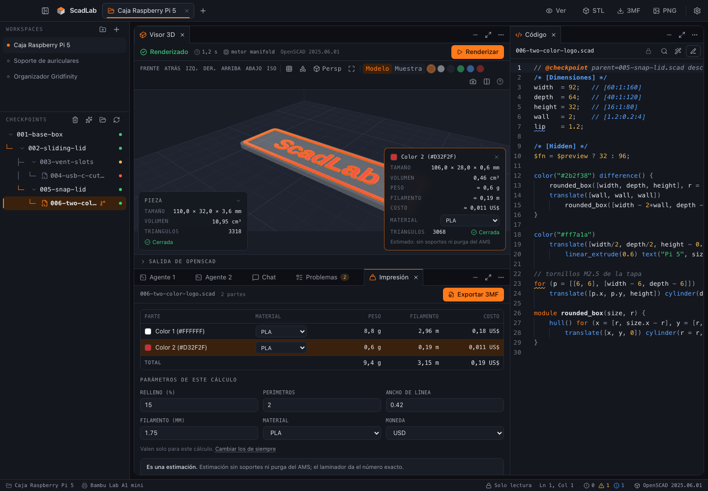
El panel Impresión: una fila por parte con su material, peso, filamento y costo, el total, y los parámetros del cálculo.
El panel Impresión
Ábrelo en Ver → Impresión (⌘⇧7 / Ctrl+Shift+7); en los diseños de fábrica es una pestaña junto a
Problemas. Necesita un render correcto del checkpoint.
Tabla por parte: color, material (se cambia en la propia fila), peso, metros de filamento y costo, y el
total. Un clic en una fila selecciona esa parte en el visor.
Parámetros: relleno, perímetros, ancho de línea, diámetro del filamento, material por defecto y
moneda. Al cambiarlos, la estimación se recalcula en el acto. Valen solo para ese cálculo; los de
siempre se fijan en Configuración → Impresión, y Restablecer vuelve a ellos.
Una pieza no se imprime maciza: se imprimen las paredes enteras y el interior solo en parte
(el relleno). El cálculo, por cada parte:
Pared = perímetros × ancho de línea (por defecto 2 × 0,42 mm = 0,84 mm de espesor).
Cáscara = superficie de la pieza × espesor de pared. Es el material de las paredes, que se imprime
macizo. Si la pieza es tan delgada que la pared ocupa más que su volumen, cuenta solo el volumen (no se
cuenta material de más).
Interior = volumen − cáscara, y solo se imprime el % de relleno de él.
Volumen efectivo = cáscara + interior × relleno.
Peso = volumen efectivo × densidad del material.
Filamento = volumen efectivo ÷ área de la sección del filamento (por defecto 1,75 mm de diámetro).
Costo = peso ÷ 1000 × costo por kg del material.
Ejemplo
Un cubo de 20 mm de lado: volumen 8000 mm³ y superficie 2400 mm². Con la pared de 0,84 mm, la cáscara es
2400 × 0,84 = 2016 mm³ y el interior, 8000 − 2016 = 5984 mm³. Con 15 % de relleno, el volumen efectivo es
2016 + 5984 × 0,15 = 2913,6 mm³. En PLA (1,24 g/cm³) pesa 2,9136 × 1,24 ≈ 3,61 g, lleva
unos 1,21 m de filamento de 1,75 mm y, con PLA a 20 la moneda por kg, cuesta ≈ 0,07.
Densidades por defecto
Material
Densidad (g/cm³)
PLA
1,24
PETG
1,27
ABS
1,04
ASA
1,07
TPU
1,21
Densidad y costo por kg se cambian en Configuración → Impresión → Materiales.
El costo por kg se escribe en tu propia moneda: ScadLab solo la muestra, no convierte.
Es una estimación
Sin soportes, balsa ni borde, sin la purga del AMS al cambiar
de color y sin mirar la forma del relleno (giroide, rejilla…). Para el número exacto, el que da Bambu Studio al
laminar. El MCP (measure) usa esta misma fórmula, así que lo que ve el agente es lo que ves tú.
Idioma, OpenSCAD y agentes Disponible
Lo básico de Configuración: en qué idioma te habla la app, qué tan grande se ve, dónde está OpenSCAD
y qué agentes encontró.
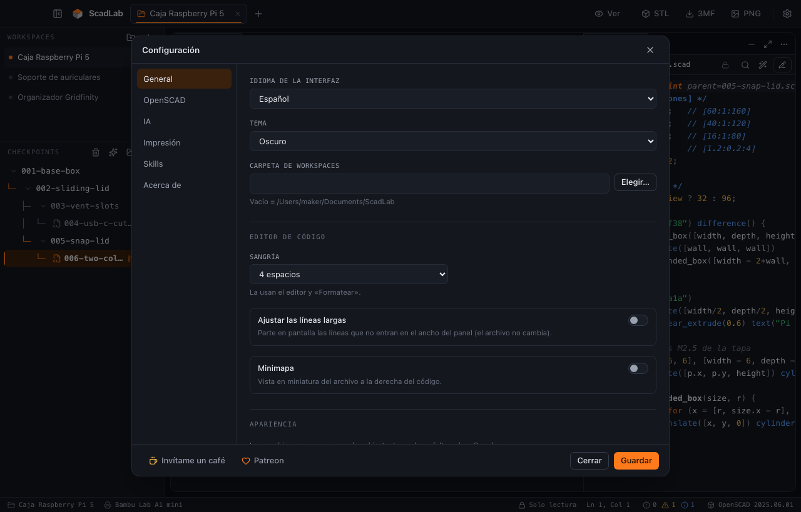
Configuración → General: idioma, tema y carpeta de workspaces.
Idioma
Español o English. El cambio se aplica al momento y se recuerda.
Apariencia y tamaños
El bloque Apariencia de la pestaña General te deja ajustar la app a tu vista y a tu pantalla.
Todo se ve y se guarda al instante: no hace falta pulsar Guardar.
Tamaño de la interfaz: Compacto (90 %), Normal (100 %), Grande (115 %), Más grande
(130 %) o Máximo (150 %). Agranda o reduce el texto y los íconos de toda la aplicación; los espacios
no cambian, así que no es un zoom de la ventana.
Tamaño de letra de cada área: el editor de código, la terminal y el chat tienen cada uno
su tamaño (de 9 a 28 px), independiente del de la interfaz. Una vista previa muestra cómo se
lee cada una mientras eliges.
Restablecer apariencia vuelve la interfaz al 100 % y las tres letras a 13 px.
Con el teclado: ⌘+ / ⌘− / ⌘0 (Ctrl en Windows) suben, bajan y
restablecen el tamaño de la interfaz; con el foco dentro del editor, la terminal o el chat, esos mismos
atajos cambian la letra de esa área. Un aviso breve dice el valor al que quedó.
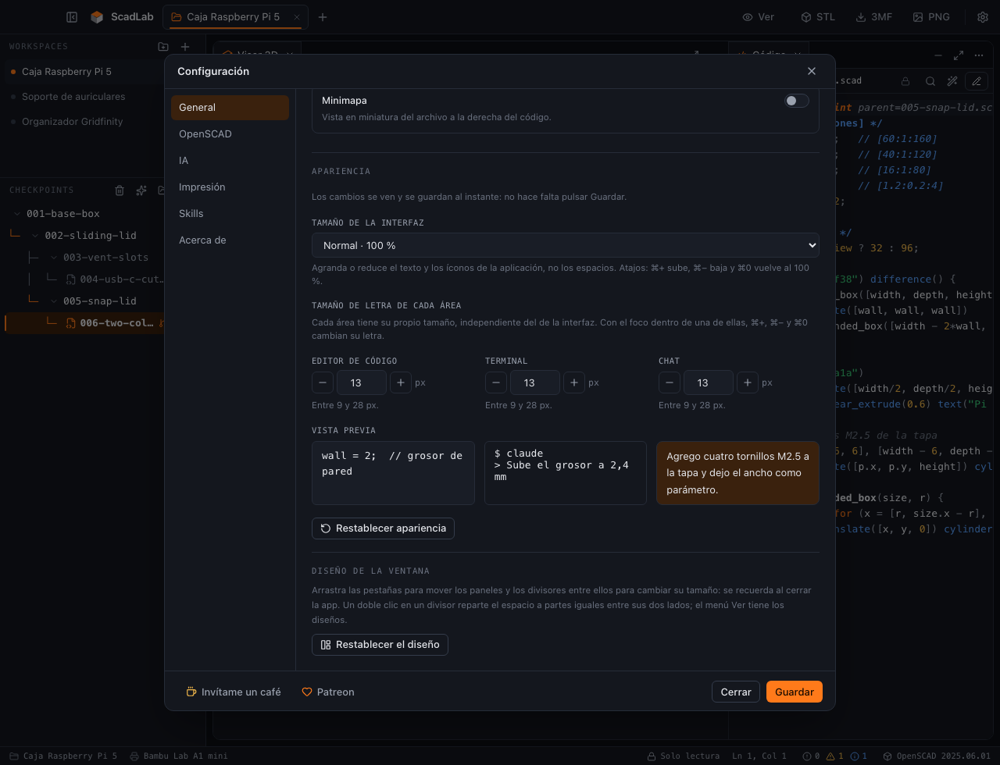
Configuración → General → Apariencia: tamaño de la interfaz, letra de cada área con vista previa y los botones para restablecer.La interfaz al 150 %: el texto y los íconos crecen; la terminal y el editor mantienen su propia letra.
Ruta de OpenSCAD
Muestra la ruta detectada y su versión. Si no lo encontró, o tienes varias versiones, escribe o elige la
ruta del ejecutable. Probar comprueba que responde. Debajo, el bloque Motor y descarga de OpenSCAD dice
qué motor se usa (y de dónde sale ese OpenSCAD) y ofrece Descargar OpenSCAD,
Cancelar y Quitar la descarga; ver Sin OpenSCAD instalado.
Auto-render y tiempo máximo
En la pestaña OpenSCAD: Renderizar automáticamente los checkpoints nuevos (activo por defecto;
ver Auto-render) y el tiempo máximo de render, de 10 a 3600 segundos
(300 por defecto). Un render que lo supera se corta y se marca como error: con CGAL, un modelo con
minkowski() o muchas esferas puede tardar minutos.
CLIs de agentes detectados
Lista Claude Code, opencode, Codex y Antigravity con su estado (encontrado / no encontrado) y la ruta. Si
instalas uno con la app abierta, pulsa Volver a detectar. Solo los agentes habilitados
aparecen en el selector de la terminal, y el agente por defecto es el que
se preselecciona. Más abajo está el bloque del servidor MCP de ScadLab y, después, los
servidores de modelos del chat.
Skills
Lista las incluidas y las tuyas, y permite crear una nueva desde la plantilla: ver
Crear tu propia skill.
Modelos de IA, materiales e impresora Disponible
Los servidores de modelos del chat, y los ajustes que alimentan la estimación de costo y el perfil de
impresora de los proyectos nuevos.
Impresión: los datos de la estimación, la ruta de Bambu Studio (con su estado de detección) y los materiales con densidad y costo por kilo, editables.
Ruta de Bambu Studio
En la pestaña Impresión. La usa Abrir en Bambu Studio tras
exportar. Vacío = autodetectar: ScadLab busca la app en su ruta de instalación y, debajo del campo,
te dice si la encontró y dónde. Si la tienes en otra carpeta, escribe la ruta o pulsa Elegir…
(en macOS, la carpeta BambuStudio.app; en Windows, bambu-studio.exe). Se aplica al
guardar.
Servidores de modelos (pestaña IA)
Son los proveedores del chat. Habilita los que uses:
Ollama: la URL (por defecto http://localhost:11434; puede ser otra máquina de tu
red) y el modelo. Probar y listar modelos comprueba la conexión y trae los que tengas
descargados.
Compatible con OpenAI (LM Studio, vLLM, OpenRouter…): la URL base y la variable de entorno de
la API key.
Anthropic: la variable de entorno de la API key.
La clave nunca se guarda en ScadLab: solo el nombre de la variable de entorno, de la que se
lee cuando hace falta.
Datos de la estimación
En la pestaña Impresión, junto al relleno, están los valores con los que se estima el peso y el costo
de una pieza (la fórmula):
Ajuste
Rango
Por defecto
Relleno (%)
0–100
15
Perímetros
1–10
2
Ancho de línea (mm)
0,2–1,5
0,42
Diámetro del filamento (mm)
1,0–3,5
1,75
Moneda
código de 3 letras (USD, EUR, GTQ…)
USD
Un valor fuera de rango no da error: vuelve al de fábrica. La moneda solo se muestra: el costo por kg de
cada material va escrito en esa misma moneda. El panel Impresión puede cambiar estos valores
para un solo cálculo sin tocar los de aquí.
Materiales
Una tabla de materiales con densidad (g/cm³) y costo por kg, más el
material por defecto. Al editar un valor, la estimación del panel Impresión se actualiza al salir del
campo.
Impresora por defecto
El perfil que se pone en printer.json al crear un workspace. Cada proyecto puede cambiarlo
después.
Dónde se guardan tus datos Disponible
Dos sitios, los dos en tu máquina: tus proyectos en las carpetas que elijas, y la
configuración en una base SQLite.
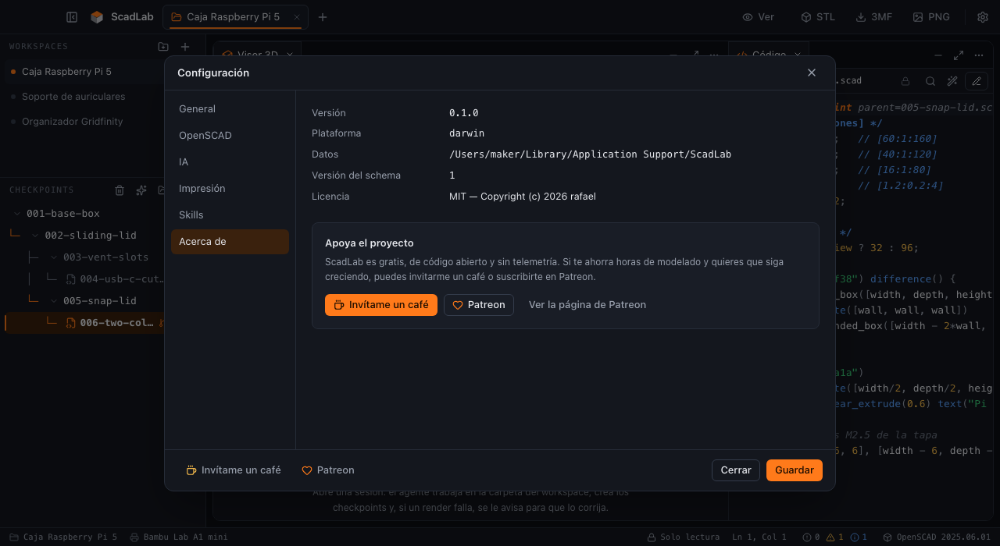
Configuración → Acerca de: dónde están tus datos.
La base de configuración
Sistema
Ruta de scadlab.db
macOS
~/Library/Application Support/ScadLab/
Windows
%AppData%\ScadLab\
Guarda idioma, rutas, agentes detectados, workspaces recientes, materiales y preferencias. No guarda
tus modelos: esos están en los .scad de cada workspace.
Copias de seguridad
Para respaldar tus diseños, copia las carpetas de los workspaces (o versiónalas con Git). Para llevarte la
configuración, copia scadlab.db con la app cerrada.
Qué sale a la red
ScadLab no tiene cuenta ni telemetría. Lo único que sale de tu máquina es lo que envían los agentes de IA
que tú ejecutas a su propio proveedor y, en el chat, lo que escribes junto con el contexto
del checkpoint abierto, hacia el servidor que elijas. Con Ollama local, nada.
De idea a 3MF multicolor para la A1 mini en 5 pasos Disponible
Un llavero bicolor con tu nombre, de la idea al archivo que abre Bambu Studio con los colores
asignados al AMS lite.
El paso 5: el diálogo de exportación muestra una parte por color y su extrusor.
Crea el workspaceLlavero con la impresora A1 mini.
Pídeselo al agente en la terminal (o a un modelo en el Chat, y guarda
su código como checkpoint):
Llavero de 50×20×4 mm con esquinas redondeadas de 3 mm y un agujero de 4 mm para la
anilla. Mi nombre «MARCO» embutido 1 mm, en negro sobre base amarilla. Una pieza por color, sin solapes.
Revisa en el visor: vista Arriba para leer el texto y Abajo para comprobar que la
base es plana. Haz clic en el texto para ver su volumen.
Ajusta si hace falta: «el texto es muy fino, súbelo a 8 mm de alto con fuente en negrita».
Eso crea un checkpoint nuevo; el anterior sigue ahí.
Exporta 3MF (⌘E): el diálogo te muestra dos partes, una por color, con su extrusor.
Pulsa Exportar y abrir en Bambu Studio, asigna amarillo y negro a dos ranuras del AMS lite y lamina.
Consejo
Con el texto embutido (no en relieve), los cambios de color
ocurren solo en el último milímetro: menos purga y más rápido.
Ramificar un diseño para probar dos variantes Disponible
Tienes una caja que funciona y quieres probar dos tapas distintas sin perder ninguna.
Con 003 como padre activo, lo próximo que cree el agente cuelga de 003 aunque ya existan otros checkpoints más nuevos.
Parte del checkpoint bueno, por ejemplo 003-base-box-final.scad.
Haz clic derecho sobre él y elige Ramificar desde aquí: queda marcado como
padre activo.
Pide la primera variante:
Añade una tapa a presión con un labio de 2 mm y 0,2 mm de holgura.
Se crea 004-snap-lid.scad (parent=003) y pasa a ser el padre activo: el árbol avanza solo.
Vuelve al 003: clic derecho → Ramificar desde aquí. Es el paso que abre la segunda rama;
sin él, la próxima petición seguiría colgando del 004.
Pide la segunda:
Partiendo de este checkpoint, añade una tapa atornillada con cuatro tornillos M3 en las esquinas.
Se crea 005-screw-lid.scad, también con parent=003: el árbol muestra dos ramas.
Exporta la que gane. La otra queda en el árbol por si cambias de idea; si ya no la quieres, mándala a la
papelera (con su rama, si tiene hijos): se puede restaurar.
Arrancar desde una plantilla
Un bin Gridfinity a medida en un par de minutos, usando las plantillas de
openscad-templates.
El agente trabaja con las herramientas del servidor MCP: get_template, create_checkpoint, render y preview.
Crea un workspace con tu impresora.
Pide:
Usa la plantilla de bin Gridfinity: 2×1 unidades, 6 unidades de alto, con dos divisiones
y etiqueta frontal. En gris.
El agente lee la plantilla con la herramienta MCP get_template, la guarda como 001-gridfinity-bin.scad con los parámetros que pediste (create_checkpoint), la renderiza y la mira con preview.
Para otro tamaño no hace falta otra petición larga: «ahora 3×2 y sin divisiones» crea el siguiente
checkpoint cambiando solo los parámetros.
Atajos de teclado
⌘ en macOS, Ctrl en Windows. Cada botón de la app recuerda su atajo al
pasar el ratón.
macOS
Windows
Qué hace
Ventana
⌘B
Ctrl+B
Mostrar u ocultar la barra lateral
⌘⇧1 … ⌘⇧7
Ctrl+Shift+1 … 7
Mostrar y enfocar Visor, Código, Agente 1, Agente 2, Chat, Problemas o Impresión (si ya está enfocado, lo oculta)
⌘⇧M
Ctrl+Shift+M
Minimizar o restaurar el grupo de paneles activo
⌘⇧0
Ctrl+Shift+0
Modo enfoque
⌘+ / ⌘−
Ctrl++ / Ctrl+−
Agrandar / reducir el texto y los íconos de la interfaz (90, 100, 115, 130, 150 %)
⌘0
Ctrl+0
Volver la interfaz al 100 %
⌘+ / ⌘− / ⌘0 con el foco en el editor, la terminal o el chat
Ctrl++ / Ctrl+− / Ctrl+0
Subir, bajar o restablecer la letra de esa área (9–28 px, 13 por defecto), sin tocar la interfaz
Pestañas de proyecto
⌃Tab / ⌃⇧Tab
Ctrl+Tab / Ctrl+Shift+Tab
Pestaña de proyecto siguiente / anterior
⌘1 … ⌘4
Ctrl+1 … 4
Ir a la pestaña de proyecto 1, 2, 3 o 4
⌘W
Ctrl+W (con el foco en una terminal de agente: Ctrl+Shift+W)
Cerrar el proyecto activo, con confirmación si pierde algo
Exportar
⌘E
Ctrl+E
Exportar a 3MF (abre el diálogo con las partes y los extrusores)
⇧⌘E
Ctrl+Shift+E
Exportar a STL (directo al diálogo de guardar)
Editor de código
⌘S
Ctrl+S
Guardar como checkpoint nuevo (en modo edición)
Doble clic
Doble clic
Pasar de solo lectura a edición
⌘F
Ctrl+F
Buscar en el código
⌥⌘F o ⌘H
Ctrl+H
Buscar y reemplazar (modo edición)
Esc
Esc
Cerrar la búsqueda o el autocompletado
⇧⌥F
Shift+Alt+F
Formatear el código
⌃Espacio
Ctrl+Espacio
Abrir el autocompletado
⇧⌘Espacio
Ctrl+Shift+Espacio
Ayuda de firma del módulo en curso
F8 / ⇧F8
F8 / Shift+F8
Ir al problema siguiente / anterior
⌘/
Ctrl+/
Comentar o descomentar la línea
⌘Z / ⇧⌘Z
Ctrl+Z / Ctrl+Y
Deshacer / rehacer (incluido el formato)
Árbol de checkpoints (con el foco en un checkpoint)
↑↓
↑↓
Pasar al checkpoint anterior o siguiente
←→
←→
Plegar o desplegar su rama
F2
F2
Renombrar (el nombre que se muestra) en la propia fila
⌫
Supr
Mover a la papelera, con confirmación
Shift+F10 o tecla de menú
Shift+F10 o tecla de menú
Abrir el menú del checkpoint (también, clic derecho)
Terminal de agente
⌘C
Ctrl+C
Copiar la selección. En Windows, sin selección, Ctrl+C interrumpe al agente; en macOS, ⌃C siempre le llega
⌘V
Ctrl+V
Pegar en la terminal
Chat
↵
Enter
Enviar el mensaje
⇧↵
Shift+Enter
Agregar una línea al mensaje
Visor 3D (con el visor enfocado: clic en él)
←→↑↓
←→↑↓
Orbitar
Shift+flechas
Shift+flechas
Desplazar (pan)
+ / −
+ / −
Zoom
1–7
1–7
Vistas: Frente, Atrás, Izquierda, Derecha, Arriba, Abajo, Iso
F
F
Encuadrar la pieza
W
W
Wireframe
E
E
Aristas
O
O
Ortográfica / perspectiva
Esta ayuda
/
/
Ir al buscador
↑↓↵
↑↓Enter
Elegir y abrir un resultado
Esc
Esc
Cerrar el buscador
Preguntas frecuentes
¿Necesito saber OpenSCAD?
No para empezar: describes la pieza y la IA escribe el código.
Saber leerlo ayuda a pedir cambios precisos («sube wall a 2,4»), y el editor te deja
tocarlo a mano.
¿Necesito una suscripción de IA?
Para los agentes de terminal, la que pida cada CLI
(Claude Code, Codex…); para el chat, la de su proveedor. Si no quieres pagar, usa el
chat con Ollama en local, con menos precisión.
¿Por qué la IA no puede editar un checkpoint?
Porque el historial se reconstruye de los
archivos: si uno cambiara, el árbol dejaría de decir la verdad. Ver por qué son
inmutables.
¿Funciona con impresoras que no son Bambu Lab?
El STL sirve para cualquier slicer y las
reglas FDM son las mismas. Lo específico de Bambu son los perfiles incluidos y el flujo de 3MF multicolor con AMS.
Exporté a 3MF y Bambu Studio no muestra los colores
Comprueba que cada pieza de primer
nivel tiene su color(), que no se solapan, y que tu OpenSCAD es una versión reciente que exporta color en
3MF (Requisitos). Al importar, acepta cargarlo como un objeto con varias partes.
¿Hay versión para Linux o Mac con Intel?
No se publican binarios para esas plataformas.
Puedes intentar compilar desde el código, sin soporte.
¿Dónde están mis modelos si desinstalo la app?
En las carpetas de tus workspaces, intactos.
Solo se pierde la configuración de scadlab.db; ver Dónde se guardan tus datos.
ScadLab es software libre bajo la licencia MIT (copyright 2026 rafael). Puedes usarlo, copiarlo,
modificarlo, distribuirlo y usarlo en el trabajo o con fines comerciales, siempre que conserves el aviso de
copyright y el texto de la licencia en las copias que distribuyas. El texto completo es el archivo
LICENSE del repositorio, y es el que vale
por encima de este resumen.
OpenSCAD se distribuye bajo GPL. ScadLab lo usa siempre como un programa aparte: el que instalas tú o
descargas desde la app, o el motor integrado (el OpenSCAD oficial compilado a WebAssembly, sin modificar;
ver THIRD_PARTY_NOTICES.md). Las librerías que agregues en la carpeta lib/ de un workspace (BOSL2, MCAD,
NopSCADlib…) conservan su propia licencia, igual que los modelos que diseñes: son tuyos.
¿Necesito una cuenta o una licencia?
No. Es MIT, no hay registro ni servidor de la app. Los agentes de IA (Claude Code, Codex…) usan tu propia cuenta de cada uno.